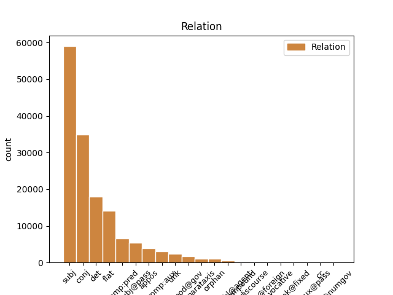
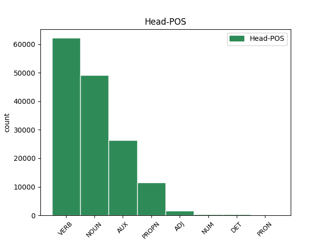
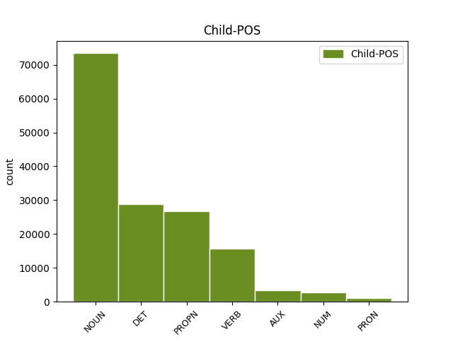

Distribution of features within this leaf



Agreement Rules sorted by frequency.
- When the dependent token is the subject(subj) of the head token, and the dependent token is NOUN.
1 Proto _ _ _ _ 0 _ _ _
2 je _ _ _ _ 0 _ _ _
3 třeba _ _ _ _ 0 _ _ _
4 připomenout _ _ _ _ 0 _ _ _
5 , _ _ _ _ 0 _ _ _
6 že _ _ _ _ 0 _ _ _
7 riziko riziko NOUN NNNS1-----A---- Case=Nom|Gender=Neut|Number=Sing|Polarity=Pos 15 subj _ _
8 takové _ _ _ _ 0 _ _ _
9 globálně _ _ _ _ 0 _ _ _
10 ničivé _ _ _ _ 0 _ _ _
11 srážky _ _ _ _ 0 _ _ _
12 v _ _ _ _ 0 _ _ _
13 nejbližším _ _ _ _ 0 _ _ _
14 století _ _ _ _ 0 _ _ _
15 je být AUX VB-S---3P-AA--- Mood=Ind|Number=Sing|Person=3|Polarity=Pos|Tense=Pres|VerbForm=Fin|Voice=Act 0 _ _ _
16 opravdu _ _ _ _ 0 _ _ _
17 minimální _ _ _ _ 0 _ _ _
18 ; _ _ _ _ 0 _ _ _
1 Proto _ _ _ _ 0 _ _ _
2 je _ _ _ _ 0 _ _ _
3 třeba _ _ _ _ 0 _ _ _
4 připomenout _ _ _ _ 0 _ _ _
5 , _ _ _ _ 0 _ _ _
6 že _ _ _ _ 0 _ _ _
7 riziko _ _ _ _ 0 _ _ _
8 takové takový DET PDFS2---------- Case=Gen|Gender=Fem|Number=Sing|PronType=Dem 11 det _ _
9 globálně _ _ _ _ 0 _ _ _
10 ničivé _ _ _ _ 0 _ _ _
11 srážky srážka NOUN NNFS2-----A---- Case=Gen|Gender=Fem|Number=Sing|Polarity=Pos 0 _ _ _
12 v _ _ _ _ 0 _ _ _
13 nejbližším _ _ _ _ 0 _ _ _
14 století _ _ _ _ 0 _ _ _
15 je _ _ _ _ 0 _ _ _
16 opravdu _ _ _ _ 0 _ _ _
17 minimální _ _ _ _ 0 _ _ _
18 ; _ _ _ _ 0 _ _ _
1 Otec otec NOUN NNMS1-----A---- Animacy=Anim|Case=Nom|Gender=Masc|Number=Sing|Polarity=Pos 0 _ _ _
2 americké _ _ _ _ 0 _ _ _
3 vodíkové _ _ _ _ 0 _ _ _
4 pumy _ _ _ _ 0 _ _ _
5 Edward _ _ _ _ 0 _ _ _
6 Teller Teller PROPN NNMS1-----A---- Animacy=Anim|Case=Nom|Gender=Masc|NameType=Sur|Number=Sing|Polarity=Pos 1 flat _ _
7 se _ _ _ _ 0 _ _ _
8 už _ _ _ _ 0 _ _ _
9 nechal _ _ _ _ 0 _ _ _
10 slyšet _ _ _ _ 0 _ _ _
11 , _ _ _ _ 0 _ _ _
12 že _ _ _ _ 0 _ _ _
13 by _ _ _ _ 0 _ _ _
14 se _ _ _ _ 0 _ _ _
15 mohla _ _ _ _ 0 _ _ _
16 vyvinout _ _ _ _ 0 _ _ _
17 kosmická _ _ _ _ 0 _ _ _
18 bomba _ _ _ _ 0 _ _ _
19 na _ _ _ _ 0 _ _ _
20 úrovni _ _ _ _ 0 _ _ _
21 sto _ _ _ _ 0 _ _ _
22 gigatun _ _ _ _ 0 _ _ _
23 ( _ _ _ _ 0 _ _ _
24 ! _ _ _ _ 0 _ _ _
25 ! _ _ _ _ 0 _ _ _
26 ) _ _ _ _ 0 _ _ _
27 TNT _ _ _ _ 0 _ _ _
28 , _ _ _ _ 0 _ _ _
29 což _ _ _ _ 0 _ _ _
30 vyvolalo _ _ _ _ 0 _ _ _
31 zděšení _ _ _ _ 0 _ _ _
32 mezi _ _ _ _ 0 _ _ _
33 astronomy _ _ _ _ 0 _ _ _
34 i _ _ _ _ 0 _ _ _
35 novináři _ _ _ _ 0 _ _ _
36 . _ _ _ _ 0 _ _ _
1 Otec _ _ _ _ 0 _ _ _
2 americké _ _ _ _ 0 _ _ _
3 vodíkové _ _ _ _ 0 _ _ _
4 pumy _ _ _ _ 0 _ _ _
5 Edward _ _ _ _ 0 _ _ _
6 Teller _ _ _ _ 0 _ _ _
7 se _ _ _ _ 0 _ _ _
8 už _ _ _ _ 0 _ _ _
9 nechal _ _ _ _ 0 _ _ _
10 slyšet _ _ _ _ 0 _ _ _
11 , _ _ _ _ 0 _ _ _
12 že _ _ _ _ 0 _ _ _
13 by _ _ _ _ 0 _ _ _
14 se _ _ _ _ 0 _ _ _
15 mohla _ _ _ _ 0 _ _ _
16 vyvinout _ _ _ _ 0 _ _ _
17 kosmická _ _ _ _ 0 _ _ _
18 bomba _ _ _ _ 0 _ _ _
19 na _ _ _ _ 0 _ _ _
20 úrovni _ _ _ _ 0 _ _ _
21 sto _ _ _ _ 0 _ _ _
22 gigatun _ _ _ _ 0 _ _ _
23 ( _ _ _ _ 0 _ _ _
24 ! _ _ _ _ 0 _ _ _
25 ! _ _ _ _ 0 _ _ _
26 ) _ _ _ _ 0 _ _ _
27 TNT _ _ _ _ 0 _ _ _
28 , _ _ _ _ 0 _ _ _
29 což _ _ _ _ 0 _ _ _
30 vyvolalo _ _ _ _ 0 _ _ _
31 zděšení _ _ _ _ 0 _ _ _
32 mezi _ _ _ _ 0 _ _ _
33 astronomy astronom NOUN NNMP7-----A---- Animacy=Anim|Case=Ins|Gender=Masc|Number=Plur|Polarity=Pos 0 _ _ _
34 i _ _ _ _ 0 _ _ _
35 novináři novinář NOUN NNMP7-----A---- Animacy=Anim|Case=Ins|Gender=Masc|Number=Plur|Polarity=Pos 33 conj _ SpaceAfter=No
36 . _ _ _ _ 0 _ _ _
1 Teller _ _ _ _ 0 _ _ _
2 se _ _ _ _ 0 _ _ _
3 bránil _ _ _ _ 0 _ _ _
4 charakteristickým _ _ _ _ 0 _ _ _
5 způsobem _ _ _ _ 0 _ _ _
6 : _ _ _ _ 0 _ _ _
7 " _ _ _ _ 0 _ _ _
8 Každý _ _ _ _ 0 _ _ _
9 kojenec _ _ _ _ 0 _ _ _
10 se _ _ _ _ 0 _ _ _
11 dá dát VERB VB-S---3P-AA--- Mood=Ind|Number=Sing|Person=3|Polarity=Pos|Tense=Pres|VerbForm=Fin|Voice=Act 0 _ _ _
12 jednou _ _ _ _ 0 _ _ _
13 zneužít _ _ _ _ 0 _ _ _
14 pro _ _ _ _ 0 _ _ _
15 agresívní _ _ _ _ 0 _ _ _
16 útok _ _ _ _ 0 _ _ _
17 - _ _ _ _ 0 _ _ _
18 znamená znamenat VERB VB-S---3P-AA--- Aspect=Imp|Mood=Ind|Number=Sing|Person=3|Polarity=Pos|Tense=Pres|VerbForm=Fin|Voice=Act 11 conj _ _
19 to _ _ _ _ 0 _ _ _
20 snad _ _ _ _ 0 _ _ _
21 , _ _ _ _ 0 _ _ _
22 že _ _ _ _ 0 _ _ _
23 máme _ _ _ _ 0 _ _ _
24 přestat _ _ _ _ 0 _ _ _
25 s _ _ _ _ 0 _ _ _
26 výrobou _ _ _ _ 0 _ _ _
27 dětí _ _ _ _ 0 _ _ _
28 ? _ _ _ _ 0 _ _ _
29 " _ _ _ _ 0 _ _ _
1 na _ _ _ _ 0 _ _ _
2 kosmické _ _ _ _ 0 _ _ _
3 střelnici _ _ _ _ 0 _ _ _
4 zvané _ _ _ _ 0 _ _ _
5 sluneční _ _ _ _ 0 _ _ _
6 soustava _ _ _ _ 0 _ _ _
7 to ten DET PDNS1---------- Case=Nom|Gender=Neut|Number=Sing|PronType=Dem 8 subj _ _
8 bude být AUX VB-S---3F-AA--- Mood=Ind|Number=Sing|Person=3|Polarity=Pos|Tense=Fut|VerbForm=Fin|Voice=Act 0 _ _ _
9 téměř _ _ _ _ 0 _ _ _
10 jistě _ _ _ _ 0 _ _ _
11 člověk _ _ _ _ 0 _ _ _
12 , _ _ _ _ 0 _ _ _
13 kdo _ _ _ _ 0 _ _ _
14 vytasí _ _ _ _ 0 _ _ _
15 jako _ _ _ _ 0 _ _ _
16 prvý _ _ _ _ 0 _ _ _
17 . _ _ _ _ 0 _ _ _
1 Teller Teller PROPN NNMS1-----A---- Animacy=Anim|Case=Nom|Gender=Masc|NameType=Sur|Number=Sing|Polarity=Pos 3 subj _ _
2 se _ _ _ _ 0 _ _ _
3 bránil bránit VERB VpYS---XR-AA--- Gender=Masc|Number=Sing|Polarity=Pos|Tense=Past|VerbForm=Part|Voice=Act 0 _ _ _
4 charakteristickým _ _ _ _ 0 _ _ _
5 způsobem _ _ _ _ 0 _ _ _
6 : _ _ _ _ 0 _ _ _
7 " _ _ _ _ 0 _ _ _
8 Každý _ _ _ _ 0 _ _ _
9 kojenec _ _ _ _ 0 _ _ _
10 se _ _ _ _ 0 _ _ _
11 dá _ _ _ _ 0 _ _ _
12 jednou _ _ _ _ 0 _ _ _
13 zneužít _ _ _ _ 0 _ _ _
14 pro _ _ _ _ 0 _ _ _
15 agresívní _ _ _ _ 0 _ _ _
16 útok _ _ _ _ 0 _ _ _
17 - _ _ _ _ 0 _ _ _
18 znamená _ _ _ _ 0 _ _ _
19 to _ _ _ _ 0 _ _ _
20 snad _ _ _ _ 0 _ _ _
21 , _ _ _ _ 0 _ _ _
22 že _ _ _ _ 0 _ _ _
23 máme _ _ _ _ 0 _ _ _
24 přestat _ _ _ _ 0 _ _ _
25 s _ _ _ _ 0 _ _ _
26 výrobou _ _ _ _ 0 _ _ _
27 dětí _ _ _ _ 0 _ _ _
28 ? _ _ _ _ 0 _ _ _
29 " _ _ _ _ 0 _ _ _
1 na _ _ _ _ 0 _ _ _
2 kosmické _ _ _ _ 0 _ _ _
3 střelnici _ _ _ _ 0 _ _ _
4 zvané _ _ _ _ 0 _ _ _
5 sluneční _ _ _ _ 0 _ _ _
6 soustava _ _ _ _ 0 _ _ _
7 to _ _ _ _ 0 _ _ _
8 bude být AUX VB-S---3F-AA--- Mood=Ind|Number=Sing|Person=3|Polarity=Pos|Tense=Fut|VerbForm=Fin|Voice=Act 0 _ _ _
9 téměř _ _ _ _ 0 _ _ _
10 jistě _ _ _ _ 0 _ _ _
11 člověk člověk NOUN NNMS1-----A---- Animacy=Anim|Case=Nom|Gender=Masc|Number=Sing|Polarity=Pos 8 comp:pred _ SpaceAfter=No
12 , _ _ _ _ 0 _ _ _
13 kdo _ _ _ _ 0 _ _ _
14 vytasí _ _ _ _ 0 _ _ _
15 jako _ _ _ _ 0 _ _ _
16 prvý _ _ _ _ 0 _ _ _
17 . _ _ _ _ 0 _ _ _
1 Všechny _ _ _ _ 0 _ _ _
2 dohromady _ _ _ _ 0 _ _ _
3 i _ _ _ _ 0 _ _ _
4 s _ _ _ _ 0 _ _ _
5 Islandem Island PROPN NNIS7-----A---- Animacy=Inan|Case=Ins|Gender=Masc|NameType=Geo|Number=Sing|Polarity=Pos 0 _ _ _
6 , _ _ _ _ 0 _ _ _
7 Grónskem Grónsko PROPN NNNS7-----A---- Case=Ins|Gender=Neut|NameType=Geo|Number=Sing|Polarity=Pos 5 conj _ _
8 a _ _ _ _ 0 _ _ _
9 Faerskými _ _ _ _ 0 _ _ _
10 ostrovy _ _ _ _ 0 _ _ _
11 nedají _ _ _ _ 0 _ _ _
12 dohromady _ _ _ _ 0 _ _ _
13 25 _ _ _ _ 0 _ _ _
14 miliónů _ _ _ _ 0 _ _ _
15 obyvatel _ _ _ _ 0 _ _ _
16 . _ _ _ _ 0 _ _ _
1 Teller _ _ _ _ 0 _ _ _
2 se _ _ _ _ 0 _ _ _
3 bránil _ _ _ _ 0 _ _ _
4 charakteristickým _ _ _ _ 0 _ _ _
5 způsobem _ _ _ _ 0 _ _ _
6 : _ _ _ _ 0 _ _ _
7 " _ _ _ _ 0 _ _ _
8 Každý _ _ _ _ 0 _ _ _
9 kojenec kojenec NOUN NNMS1-----A---- Animacy=Anim|Case=Nom|Gender=Masc|Number=Sing|Polarity=Pos 11 subj@pass _ _
10 se _ _ _ _ 0 _ _ _
11 dá dát VERB VB-S---3P-AA--- Mood=Ind|Number=Sing|Person=3|Polarity=Pos|Tense=Pres|VerbForm=Fin|Voice=Act 0 _ _ _
12 jednou _ _ _ _ 0 _ _ _
13 zneužít _ _ _ _ 0 _ _ _
14 pro _ _ _ _ 0 _ _ _
15 agresívní _ _ _ _ 0 _ _ _
16 útok _ _ _ _ 0 _ _ _
17 - _ _ _ _ 0 _ _ _
18 znamená _ _ _ _ 0 _ _ _
19 to _ _ _ _ 0 _ _ _
20 snad _ _ _ _ 0 _ _ _
21 , _ _ _ _ 0 _ _ _
22 že _ _ _ _ 0 _ _ _
23 máme _ _ _ _ 0 _ _ _
24 přestat _ _ _ _ 0 _ _ _
25 s _ _ _ _ 0 _ _ _
26 výrobou _ _ _ _ 0 _ _ _
27 dětí _ _ _ _ 0 _ _ _
28 ? _ _ _ _ 0 _ _ _
29 " _ _ _ _ 0 _ _ _
1 Riziko _ _ _ _ 0 _ _ _
2 tedy _ _ _ _ 0 _ _ _
3 hrozí _ _ _ _ 0 _ _ _
4 spíše _ _ _ _ 0 _ _ _
5 od _ _ _ _ 0 _ _ _
6 těles _ _ _ _ 0 _ _ _
7 , _ _ _ _ 0 _ _ _
8 která _ _ _ _ 0 _ _ _
9 jsme být AUX VB-P---1P-AA--- Mood=Ind|Number=Plur|Person=1|Polarity=Pos|Tense=Pres|VerbForm=Fin|Voice=Act 0 _ _ _
10 dosud _ _ _ _ 0 _ _ _
11 nikdy _ _ _ _ 0 _ _ _
12 nepotkali potkat VERB VpMP---XR-NA--- Animacy=Anim|Aspect=Perf|Gender=Masc|Number=Plur|Polarity=Neg|Tense=Past|VerbForm=Part|Voice=Act 9 comp:aux _ SpaceAfter=No
13 . _ _ _ _ 0 _ _ _
1 Patrně _ _ _ _ 0 _ _ _
2 si _ _ _ _ 0 _ _ _
3 neuvědomili _ _ _ _ 0 _ _ _
4 , _ _ _ _ 0 _ _ _
5 že _ _ _ _ 0 _ _ _
6 do _ _ _ _ 0 _ _ _
7 hry _ _ _ _ 0 _ _ _
8 se _ _ _ _ 0 _ _ _
9 mohou _ _ _ _ 0 _ _ _
10 vložit _ _ _ _ 0 _ _ _
11 i _ _ _ _ 0 _ _ _
12 odborníci odborník NOUN NNMP1-----A---- Animacy=Anim|Case=Nom|Gender=Masc|Number=Plur|Polarity=Pos 0 _ _ _
13 s _ _ _ _ 0 _ _ _
14 úplně _ _ _ _ 0 _ _ _
15 jinou _ _ _ _ 0 _ _ _
16 tradicí _ _ _ _ 0 _ _ _
17 a _ _ _ _ 0 _ _ _
18 způsoby _ _ _ _ 0 _ _ _
19 řešení _ _ _ _ 0 _ _ _
20 problémů _ _ _ _ 0 _ _ _
21 - _ _ _ _ 0 _ _ _
22 totiž _ _ _ _ 0 _ _ _
23 vojenští _ _ _ _ 0 _ _ _
24 experti expert NOUN NNMP1-----A---1 Animacy=Anim|Case=Nom|Gender=Masc|Number=Plur|Polarity=Pos 12 appos _ _
25 na _ _ _ _ 0 _ _ _
26 tzv _ _ _ _ 0 _ _ _
27 . _ _ _ _ 0 _ _ _
28 hvězdné _ _ _ _ 0 _ _ _
29 války _ _ _ _ 0 _ _ _
30 . _ _ _ _ 0 _ _ _
1 Ve _ _ _ _ 0 _ _ _
2 vzdálenosti _ _ _ _ 0 _ _ _
3 150 _ _ _ _ 0 _ _ _
4 miliónů _ _ _ _ 0 _ _ _
5 km _ _ _ _ 0 _ _ _
6 ( _ _ _ _ 0 _ _ _
7 ekvivalent _ _ _ _ 0 _ _ _
8 vzdálenosti _ _ _ _ 0 _ _ _
9 Slunce _ _ _ _ 0 _ _ _
10 - _ _ _ _ 0 _ _ _
11 Země _ _ _ _ 0 _ _ _
12 ) _ _ _ _ 0 _ _ _
13 stačí stačit VERB VB-S---3P-AA--- Aspect=Imp|Mood=Ind|Number=Sing|Person=3|Polarity=Pos|Tense=Pres|VerbForm=Fin|Voice=Act 0 _ _ _
14 na _ _ _ _ 0 _ _ _
15 udělení _ _ _ _ 0 _ _ _
16 postačující _ _ _ _ 0 _ _ _
17 příčné _ _ _ _ 0 _ _ _
18 složky _ _ _ _ 0 _ _ _
19 rychlosti _ _ _ _ 0 _ _ _
20 asi _ _ _ _ 0 _ _ _
21 1 _ _ _ _ 0 _ _ _
22 Mt _ _ _ _ 0 _ _ _
23 TNT _ _ _ _ 0 _ _ _
24 , _ _ _ _ 0 _ _ _
25 ale _ _ _ _ 0 _ _ _
26 k _ _ _ _ 0 _ _ _
27 tomu _ _ _ _ 0 _ _ _
28 je být AUX VB-S---3P-AA--- Mood=Ind|Number=Sing|Person=3|Polarity=Pos|Tense=Pres|VerbForm=Fin|Voice=Act 13 conj _ _
29 třeba _ _ _ _ 0 _ _ _
30 připočítat _ _ _ _ 0 _ _ _
31 další _ _ _ _ 0 _ _ _
32 nemalou _ _ _ _ 0 _ _ _
33 energii _ _ _ _ 0 _ _ _
34 potřebnou _ _ _ _ 0 _ _ _
35 pro _ _ _ _ 0 _ _ _
36 rozbití _ _ _ _ 0 _ _ _
37 planetky _ _ _ _ 0 _ _ _
38 či _ _ _ _ 0 _ _ _
39 jádra _ _ _ _ 0 _ _ _
40 komety _ _ _ _ 0 _ _ _
41 na _ _ _ _ 0 _ _ _
42 dva _ _ _ _ 0 _ _ _
43 kusy _ _ _ _ 0 _ _ _
44 . _ _ _ _ 0 _ _ _
1 Poměrně _ _ _ _ 0 _ _ _
2 nejméně _ _ _ _ 0 _ _ _
3 spolehlivé _ _ _ _ 0 _ _ _
4 údaje _ _ _ _ 0 _ _ _
5 máme _ _ _ _ 0 _ _ _
6 o _ _ _ _ 0 _ _ _
7 tělesech _ _ _ _ 0 _ _ _
8 s _ _ _ _ 0 _ _ _
9 průměry _ _ _ _ 0 _ _ _
10 od _ _ _ _ 0 _ _ _
11 10 _ _ _ _ 0 _ _ _
12 do _ _ _ _ 0 _ _ _
13 100 _ _ _ _ 0 _ _ _
14 m _ _ _ _ 0 _ _ _
15 , _ _ _ _ 0 _ _ _
16 která _ _ _ _ 0 _ _ _
17 mohou _ _ _ _ 0 _ _ _
18 při _ _ _ _ 0 _ _ _
19 dopadu _ _ _ _ 0 _ _ _
20 způsobit _ _ _ _ 0 _ _ _
21 již _ _ _ _ 0 _ _ _
22 značnou _ _ _ _ 0 _ _ _
23 paseku _ _ _ _ 0 _ _ _
24 - _ _ _ _ 0 _ _ _
25 viz viz VERB Vi-S---2--A---1 Aspect=Perf|Mood=Imp|Number=Sing|Person=2|Polarity=Pos|VerbForm=Fin 0 _ _ _
26 exploze exploze NOUN NNFS1-----A---- Case=Nom|Gender=Fem|Number=Sing|Polarity=Pos 25 unk _ _
27 tunguzského _ _ _ _ 0 _ _ _
28 meteoritu _ _ _ _ 0 _ _ _
29 30 _ _ _ _ 0 _ _ _
30 . _ _ _ _ 0 _ _ _
31 června _ _ _ _ 0 _ _ _
32 1908 _ _ _ _ 0 _ _ _
33 , _ _ _ _ 0 _ _ _
34 vyvolaná _ _ _ _ 0 _ _ _
35 střetem _ _ _ _ 0 _ _ _
36 s _ _ _ _ 0 _ _ _
37 kamenným _ _ _ _ 0 _ _ _
38 tělesem _ _ _ _ 0 _ _ _
39 o _ _ _ _ 0 _ _ _
40 průměru _ _ _ _ 0 _ _ _
41 stěží _ _ _ _ 0 _ _ _
42 80 _ _ _ _ 0 _ _ _
43 m _ _ _ _ 0 _ _ _
44 při _ _ _ _ 0 _ _ _
45 rychlosti _ _ _ _ 0 _ _ _
46 15 _ _ _ _ 0 _ _ _
47 km _ _ _ _ 0 _ _ _
48 / _ _ _ _ 0 _ _ _
49 s _ _ _ _ 0 _ _ _
50 . _ _ _ _ 0 _ _ _
1 Také _ _ _ _ 0 _ _ _
2 jádra _ _ _ _ 0 _ _ _
3 komet _ _ _ _ 0 _ _ _
4 jsou _ _ _ _ 0 _ _ _
5 tmavá _ _ _ _ 0 _ _ _
6 , _ _ _ _ 0 _ _ _
7 jak _ _ _ _ 0 _ _ _
8 astronomové _ _ _ _ 0 _ _ _
9 zjistili _ _ _ _ 0 _ _ _
10 podrobným _ _ _ _ 0 _ _ _
11 sledováním _ _ _ _ 0 _ _ _
12 jádra _ _ _ _ 0 _ _ _
13 slavné _ _ _ _ 0 _ _ _
14 Halleyovy _ _ _ _ 0 _ _ _
15 komety _ _ _ _ 0 _ _ _
16 r _ _ _ _ 0 _ _ _
17 . _ _ _ _ 0 _ _ _
18 1986 _ _ _ _ 0 _ _ _
19 , _ _ _ _ 0 _ _ _
20 ale _ _ _ _ 0 _ _ _
21 zde _ _ _ _ 0 _ _ _
22 nám _ _ _ _ 0 _ _ _
23 příroda _ _ _ _ 0 _ _ _
24 přece _ _ _ _ 0 _ _ _
25 jen _ _ _ _ 0 _ _ _
26 pomáhá _ _ _ _ 0 _ _ _
27 tím _ _ _ _ 0 _ _ _
28 , _ _ _ _ 0 _ _ _
29 že _ _ _ _ 0 _ _ _
30 již _ _ _ _ 0 _ _ _
31 ve _ _ _ _ 0 _ _ _
32 vzdálenosti _ _ _ _ 0 _ _ _
33 300 _ _ _ _ 0 _ _ _
34 miliónů _ _ _ _ 0 _ _ _
35 km _ _ _ _ 0 _ _ _
36 od _ _ _ _ 0 _ _ _
37 Slunce _ _ _ _ 0 _ _ _
38 ( _ _ _ _ 0 _ _ _
39 tj _ _ _ _ 0 _ _ _
40 . _ _ _ _ 0 _ _ _
41 dvojnásobek _ _ _ _ 0 _ _ _
42 vzdálenosti _ _ _ _ 0 _ _ _
43 Slunce _ _ _ _ 0 _ _ _
44 - _ _ _ _ 0 _ _ _
45 Země _ _ _ _ 0 _ _ _
46 ) _ _ _ _ 0 _ _ _
47 se _ _ _ _ 0 _ _ _
48 působením _ _ _ _ 0 _ _ _
49 slunečního _ _ _ _ 0 _ _ _
50 záření _ _ _ _ 0 _ _ _
51 začne _ _ _ _ 0 _ _ _
52 z _ _ _ _ 0 _ _ _
53 povrchu _ _ _ _ 0 _ _ _
54 jádra _ _ _ _ 0 _ _ _
55 odpařovat _ _ _ _ 0 _ _ _
56 plyn _ _ _ _ 0 _ _ _
57 a _ _ _ _ 0 _ _ _
58 uvolňovat _ _ _ _ 0 _ _ _
59 prach _ _ _ _ 0 _ _ _
60 , _ _ _ _ 0 _ _ _
61 které _ _ _ _ 0 _ _ _
62 kolem _ _ _ _ 0 _ _ _
63 jádra _ _ _ _ 0 _ _ _
64 vytvářejí _ _ _ _ 0 _ _ _
65 rozsáhlou _ _ _ _ 0 _ _ _
66 komu _ _ _ _ 0 _ _ _
67 , _ _ _ _ 0 _ _ _
68 jež jenž PRON PJFS1---------- Case=Nom|Gender=Fem|Number=Sing|PrepCase=Npr|PronType=Rel 71 subj _ LGloss=(který_[ve_vedl.větě])
69 " _ _ _ _ 0 _ _ _
70 sama _ _ _ _ 0 _ _ _
71 svítí svítit VERB VB-S---3P-AA--- Aspect=Imp|Mood=Ind|Number=Sing|Person=3|Polarity=Pos|Tense=Pres|VerbForm=Fin|Voice=Act 0 _ _ _
72 " _ _ _ _ 0 _ _ _
73 , _ _ _ _ 0 _ _ _
74 a _ _ _ _ 0 _ _ _
75 tím _ _ _ _ 0 _ _ _
76 se _ _ _ _ 0 _ _ _
77 podstatně _ _ _ _ 0 _ _ _
78 ulehčuje _ _ _ _ 0 _ _ _
79 objevení _ _ _ _ 0 _ _ _
80 komety _ _ _ _ 0 _ _ _
81 - _ _ _ _ 0 _ _ _
82 zhruba _ _ _ _ 0 _ _ _
83 polovinu _ _ _ _ 0 _ _ _
84 nových _ _ _ _ 0 _ _ _
85 komet _ _ _ _ 0 _ _ _
86 odhalí _ _ _ _ 0 _ _ _
87 astronomové _ _ _ _ 0 _ _ _
88 - _ _ _ _ 0 _ _ _
89 amatéři _ _ _ _ 0 _ _ _
90 v _ _ _ _ 0 _ _ _
91 nevelkých _ _ _ _ 0 _ _ _
92 světelných _ _ _ _ 0 _ _ _
93 dalekohledech _ _ _ _ 0 _ _ _
94 . _ _ _ _ 0 _ _ _
1 Také _ _ _ _ 0 _ _ _
2 jádra _ _ _ _ 0 _ _ _
3 komet _ _ _ _ 0 _ _ _
4 jsou _ _ _ _ 0 _ _ _
5 tmavá _ _ _ _ 0 _ _ _
6 , _ _ _ _ 0 _ _ _
7 jak _ _ _ _ 0 _ _ _
8 astronomové _ _ _ _ 0 _ _ _
9 zjistili _ _ _ _ 0 _ _ _
10 podrobným _ _ _ _ 0 _ _ _
11 sledováním _ _ _ _ 0 _ _ _
12 jádra _ _ _ _ 0 _ _ _
13 slavné _ _ _ _ 0 _ _ _
14 Halleyovy _ _ _ _ 0 _ _ _
15 komety _ _ _ _ 0 _ _ _
16 r _ _ _ _ 0 _ _ _
17 . _ _ _ _ 0 _ _ _
18 1986 _ _ _ _ 0 _ _ _
19 , _ _ _ _ 0 _ _ _
20 ale _ _ _ _ 0 _ _ _
21 zde _ _ _ _ 0 _ _ _
22 nám _ _ _ _ 0 _ _ _
23 příroda _ _ _ _ 0 _ _ _
24 přece _ _ _ _ 0 _ _ _
25 jen _ _ _ _ 0 _ _ _
26 pomáhá _ _ _ _ 0 _ _ _
27 tím _ _ _ _ 0 _ _ _
28 , _ _ _ _ 0 _ _ _
29 že _ _ _ _ 0 _ _ _
30 již _ _ _ _ 0 _ _ _
31 ve _ _ _ _ 0 _ _ _
32 vzdálenosti _ _ _ _ 0 _ _ _
33 300 _ _ _ _ 0 _ _ _
34 miliónů _ _ _ _ 0 _ _ _
35 km _ _ _ _ 0 _ _ _
36 od _ _ _ _ 0 _ _ _
37 Slunce _ _ _ _ 0 _ _ _
38 ( _ _ _ _ 0 _ _ _
39 tj _ _ _ _ 0 _ _ _
40 . _ _ _ _ 0 _ _ _
41 dvojnásobek _ _ _ _ 0 _ _ _
42 vzdálenosti _ _ _ _ 0 _ _ _
43 Slunce _ _ _ _ 0 _ _ _
44 - _ _ _ _ 0 _ _ _
45 Země _ _ _ _ 0 _ _ _
46 ) _ _ _ _ 0 _ _ _
47 se _ _ _ _ 0 _ _ _
48 působením _ _ _ _ 0 _ _ _
49 slunečního _ _ _ _ 0 _ _ _
50 záření _ _ _ _ 0 _ _ _
51 začne _ _ _ _ 0 _ _ _
52 z _ _ _ _ 0 _ _ _
53 povrchu _ _ _ _ 0 _ _ _
54 jádra _ _ _ _ 0 _ _ _
55 odpařovat _ _ _ _ 0 _ _ _
56 plyn _ _ _ _ 0 _ _ _
57 a _ _ _ _ 0 _ _ _
58 uvolňovat _ _ _ _ 0 _ _ _
59 prach _ _ _ _ 0 _ _ _
60 , _ _ _ _ 0 _ _ _
61 které _ _ _ _ 0 _ _ _
62 kolem _ _ _ _ 0 _ _ _
63 jádra _ _ _ _ 0 _ _ _
64 vytvářejí _ _ _ _ 0 _ _ _
65 rozsáhlou _ _ _ _ 0 _ _ _
66 komu _ _ _ _ 0 _ _ _
67 , _ _ _ _ 0 _ _ _
68 jež _ _ _ _ 0 _ _ _
69 " _ _ _ _ 0 _ _ _
70 sama sám DET PLFS1---------- Case=Nom|Gender=Fem|Number=Sing|PronType=Emp 71 comp:pred _ LGloss=(samotný)
71 svítí svítit VERB VB-S---3P-AA--- Aspect=Imp|Mood=Ind|Number=Sing|Person=3|Polarity=Pos|Tense=Pres|VerbForm=Fin|Voice=Act 0 _ _ _
72 " _ _ _ _ 0 _ _ _
73 , _ _ _ _ 0 _ _ _
74 a _ _ _ _ 0 _ _ _
75 tím _ _ _ _ 0 _ _ _
76 se _ _ _ _ 0 _ _ _
77 podstatně _ _ _ _ 0 _ _ _
78 ulehčuje _ _ _ _ 0 _ _ _
79 objevení _ _ _ _ 0 _ _ _
80 komety _ _ _ _ 0 _ _ _
81 - _ _ _ _ 0 _ _ _
82 zhruba _ _ _ _ 0 _ _ _
83 polovinu _ _ _ _ 0 _ _ _
84 nových _ _ _ _ 0 _ _ _
85 komet _ _ _ _ 0 _ _ _
86 odhalí _ _ _ _ 0 _ _ _
87 astronomové _ _ _ _ 0 _ _ _
88 - _ _ _ _ 0 _ _ _
89 amatéři _ _ _ _ 0 _ _ _
90 v _ _ _ _ 0 _ _ _
91 nevelkých _ _ _ _ 0 _ _ _
92 světelných _ _ _ _ 0 _ _ _
93 dalekohledech _ _ _ _ 0 _ _ _
94 . _ _ _ _ 0 _ _ _
1 * _ _ _ _ 0 _ _ _
2 Jiřímu Jiří PROPN NNMS3-----A---- Animacy=Anim|Case=Dat|Gender=Masc|NameType=Giv|Number=Sing|Polarity=Pos 0 _ _ _
3 Zezulákovi _ _ _ _ 0 _ _ _
4 , _ _ _ _ 0 _ _ _
5 Praha Praha PROPN NNFS1-----A---- Case=Nom|Gender=Fem|NameType=Geo|Number=Sing|Polarity=Pos 2 unk _ _
6 2 _ _ _ _ 0 _ _ _
7 , _ _ _ _ 0 _ _ _
8 VI _ _ _ _ 0 _ _ _
9 . _ _ _ _ 0 _ _ _
10 roč _ _ _ _ 0 _ _ _
11 . _ _ _ _ 0 _ _ _
12 , _ _ _ _ 0 _ _ _
13 za _ _ _ _ 0 _ _ _
14 výborné _ _ _ _ 0 _ _ _
15 studijní _ _ _ _ 0 _ _ _
16 výsledky _ _ _ _ 0 _ _ _
17 ( _ _ _ _ 0 _ _ _
18 průměr _ _ _ _ 0 _ _ _
19 1.42 _ _ _ _ 0 _ _ _
20 ) _ _ _ _ 0 _ _ _
21 , _ _ _ _ 0 _ _ _
22 práci _ _ _ _ 0 _ _ _
23 na _ _ _ _ 0 _ _ _
24 Psychiatrické _ _ _ _ 0 _ _ _
25 klinice _ _ _ _ 0 _ _ _
26 ( _ _ _ _ 0 _ _ _
27 služba _ _ _ _ 0 _ _ _
28 na _ _ _ _ 0 _ _ _
29 jednotce _ _ _ _ 0 _ _ _
30 intenzívní _ _ _ _ 0 _ _ _
31 péče _ _ _ _ 0 _ _ _
32 ) _ _ _ _ 0 _ _ _
33 , _ _ _ _ 0 _ _ _
34 za _ _ _ _ 0 _ _ _
35 aktivní _ _ _ _ 0 _ _ _
36 práci _ _ _ _ 0 _ _ _
37 v _ _ _ _ 0 _ _ _
38 Akademickém _ _ _ _ 0 _ _ _
39 senátu _ _ _ _ 0 _ _ _
40 , _ _ _ _ 0 _ _ _
41 studentské _ _ _ _ 0 _ _ _
42 organizaci _ _ _ _ 0 _ _ _
43 Medici _ _ _ _ 0 _ _ _
44 di _ _ _ _ 0 _ _ _
45 Praga _ _ _ _ 0 _ _ _
46 a _ _ _ _ 0 _ _ _
47 za _ _ _ _ 0 _ _ _
48 všeobecný _ _ _ _ 0 _ _ _
49 zájem _ _ _ _ 0 _ _ _
50 o _ _ _ _ 0 _ _ _
51 přírodní _ _ _ _ 0 _ _ _
52 a _ _ _ _ 0 _ _ _
53 technické _ _ _ _ 0 _ _ _
54 vědy _ _ _ _ 0 _ _ _
55 . _ _ _ _ 0 _ _ _
1 Dnes _ _ _ _ 0 _ _ _
2 máme _ _ _ _ 0 _ _ _
3 přehled _ _ _ _ 0 _ _ _
4 o _ _ _ _ 0 _ _ _
5 tělesech _ _ _ _ 0 _ _ _
6 s _ _ _ _ 0 _ _ _
7 hmotností _ _ _ _ 0 _ _ _
8 od _ _ _ _ 0 _ _ _
9 10 _ _ _ _ 0 _ _ _
10 - _ _ _ _ 0 _ _ _
11 21 _ _ _ _ 0 _ _ _
12 kg _ _ _ _ 0 _ _ _
13 do _ _ _ _ 0 _ _ _
14 10 _ _ _ _ 0 _ _ _
15 15 _ _ _ _ 0 _ _ _
16 kg _ _ _ _ 0 _ _ _
17 , _ _ _ _ 0 _ _ _
18 která který DET P4NP1---------- Case=Nom|Gender=Neut|Number=Plur|PronType=Int,Rel 20 subj@pass _ _
19 se _ _ _ _ 0 _ _ _
20 sledují sledovat VERB VB-P---3P-AA--- Aspect=Imp|Mood=Ind|Number=Plur|Person=3|Polarity=Pos|Tense=Pres|VerbForm=Fin|Voice=Act 0 _ _ _
21 rozličnými _ _ _ _ 0 _ _ _
22 astronomickými _ _ _ _ 0 _ _ _
23 technikami _ _ _ _ 0 _ _ _
24 . _ _ _ _ 0 _ _ _
1 Manévr _ _ _ _ 0 _ _ _
2 zmenšuje zmenšovat VERB VB-S---3P-AA--- Aspect=Imp|Mood=Ind|Number=Sing|Person=3|Polarity=Pos|Tense=Pres|VerbForm=Fin|Voice=Act 0 _ _ _
3 riziko _ _ _ _ 0 _ _ _
4 rozbití _ _ _ _ 0 _ _ _
5 planetky _ _ _ _ 0 _ _ _
6 na _ _ _ _ 0 _ _ _
7 více _ _ _ _ 0 _ _ _
8 kusů _ _ _ _ 0 _ _ _
9 , _ _ _ _ 0 _ _ _
10 ale _ _ _ _ 0 _ _ _
11 současně _ _ _ _ 0 _ _ _
12 zvyšuje zvyšovat VERB VB-S---3P-AA--- Aspect=Imp|Mood=Ind|Number=Sing|Person=3|Polarity=Pos|Tense=Pres|VerbForm=Fin|Voice=Act 2 parataxis _ _
13 energetickou _ _ _ _ 0 _ _ _
14 náročnost _ _ _ _ 0 _ _ _
15 " _ _ _ _ 0 _ _ _
16 úpravy _ _ _ _ 0 _ _ _
17 " _ _ _ _ 0 _ _ _
18 dráhy _ _ _ _ 0 _ _ _
19 zhruba _ _ _ _ 0 _ _ _
20 o _ _ _ _ 0 _ _ _
21 dva _ _ _ _ 0 _ _ _
22 řády _ _ _ _ 0 _ _ _
23 , _ _ _ _ 0 _ _ _
24 čili _ _ _ _ 0 _ _ _
25 jsme _ _ _ _ 0 _ _ _
26 opět _ _ _ _ 0 _ _ _
27 u _ _ _ _ 0 _ _ _
28 100 _ _ _ _ 0 _ _ _
29 Mt _ _ _ _ 0 _ _ _
30 TNT _ _ _ _ 0 _ _ _
31 ! _ _ _ _ 0 _ _ _
1 Náklady _ _ _ _ 0 _ _ _
2 na _ _ _ _ 0 _ _ _
3 vývoj _ _ _ _ 0 _ _ _
4 detekčního _ _ _ _ 0 _ _ _
5 systému _ _ _ _ 0 _ _ _
6 se _ _ _ _ 0 _ _ _
7 odhadují _ _ _ _ 0 _ _ _
8 v _ _ _ _ 0 _ _ _
9 desítkách _ _ _ _ 0 _ _ _
10 miliónů _ _ _ _ 0 _ _ _
11 dolarů _ _ _ _ 0 _ _ _
12 , _ _ _ _ 0 _ _ _
13 průzkum _ _ _ _ 0 _ _ _
14 planetek _ _ _ _ 0 _ _ _
15 zblízka _ _ _ _ 0 _ _ _
16 by _ _ _ _ 0 _ _ _
17 stál _ _ _ _ 0 _ _ _
18 stovky _ _ _ _ 0 _ _ _
19 miliónů _ _ _ _ 0 _ _ _
20 dolarů _ _ _ _ 0 _ _ _
21 a _ _ _ _ 0 _ _ _
22 pravé _ _ _ _ 0 _ _ _
23 hvězdné _ _ _ _ 0 _ _ _
24 války válka NOUN NNFP1-----A---- Case=Nom|Gender=Fem|Number=Plur|Polarity=Pos 0 _ _ _
25 desítky desítka NOUN NNFP4-----A---- Case=Acc|Gender=Fem|Number=Plur|Polarity=Pos 24 orphan _ _
26 miliard _ _ _ _ 0 _ _ _
27 dolarů _ _ _ _ 0 _ _ _
28 , _ _ _ _ 0 _ _ _
29 což _ _ _ _ 0 _ _ _
30 je _ _ _ _ 0 _ _ _
31 ovšem _ _ _ _ 0 _ _ _
32 mnohem _ _ _ _ 0 _ _ _
33 méně _ _ _ _ 0 _ _ _
34 , _ _ _ _ 0 _ _ _
35 než _ _ _ _ 0 _ _ _
36 ztráty _ _ _ _ 0 _ _ _
37 , _ _ _ _ 0 _ _ _
38 které _ _ _ _ 0 _ _ _
39 by _ _ _ _ 0 _ _ _
40 způsobila _ _ _ _ 0 _ _ _
41 jediná _ _ _ _ 0 _ _ _
42 katastrofální _ _ _ _ 0 _ _ _
43 srážka _ _ _ _ 0 _ _ _
44 s _ _ _ _ 0 _ _ _
45 tělesem _ _ _ _ 0 _ _ _
46 o _ _ _ _ 0 _ _ _
47 průměru _ _ _ _ 0 _ _ _
48 nad _ _ _ _ 0 _ _ _
49 1 _ _ _ _ 0 _ _ _
50 km _ _ _ _ 0 _ _ _
51 , _ _ _ _ 0 _ _ _
52 které _ _ _ _ 0 _ _ _
53 by _ _ _ _ 0 _ _ _
54 dopadlo _ _ _ _ 0 _ _ _
55 na _ _ _ _ 0 _ _ _
56 obydlenou _ _ _ _ 0 _ _ _
57 část _ _ _ _ 0 _ _ _
58 zeměkoule _ _ _ _ 0 _ _ _
59 . _ _ _ _ 0 _ _ _
1 Naproti _ _ _ _ 0 _ _ _
2 tomu _ _ _ _ 0 _ _ _
3 jeden jeden NUM ClYS1---------- Case=Nom|Gender=Masc|Number=Sing|NumForm=Word|NumType=Card|NumValue=1,2,3 24 subj _ LNumValue=1
4 ze _ _ _ _ 0 _ _ _
5 dvou _ _ _ _ 0 _ _ _
6 světlonošů _ _ _ _ 0 _ _ _
7 umístěných _ _ _ _ 0 _ _ _
8 u _ _ _ _ 0 _ _ _
9 paty _ _ _ _ 0 _ _ _
10 schodiště _ _ _ _ 0 _ _ _
11 investiční _ _ _ _ 0 _ _ _
12 banky _ _ _ _ 0 _ _ _
13 postavené _ _ _ _ 0 _ _ _
14 národně _ _ _ _ 0 _ _ _
15 orientovanou _ _ _ _ 0 _ _ _
16 buržoazií _ _ _ _ 0 _ _ _
17 v _ _ _ _ 0 _ _ _
18 letech _ _ _ _ 0 _ _ _
19 1894 _ _ _ _ 0 _ _ _
20 - _ _ _ _ 0 _ _ _
21 96 _ _ _ _ 0 _ _ _
22 válečnou _ _ _ _ 0 _ _ _
23 sekeru _ _ _ _ 0 _ _ _
24 má mít VERB VB-S---3P-AA--- Mood=Ind|Number=Sing|Person=3|Polarity=Pos|Tense=Pres|VerbForm=Fin|Voice=Act 0 _ _ _
25 ( _ _ _ _ 0 _ _ _
26 50 _ _ _ _ 0 _ _ _
27 % _ _ _ _ 0 _ _ _
28 ! _ _ _ _ 0 _ _ _
29 ) _ _ _ _ 0 _ _ _
30 . _ _ _ _ 0 _ _ _
1 Žádný _ _ _ _ 0 _ _ _
2 z _ _ _ _ 0 _ _ _
3 obrů _ _ _ _ 0 _ _ _
4 vztyčených _ _ _ _ 0 _ _ _
5 cizákem cizák NOUN NNMS7-----A---- Animacy=Anim|Case=Ins|Gender=Masc|Number=Sing|Polarity=Pos 0 _ _ _
6 - _ _ _ _ 0 _ _ _
7 Habsburkem Habsburk PROPN NNMS7-----A---- Animacy=Anim|Case=Ins|Gender=Masc|NameType=Sur|Number=Sing|Polarity=Pos 5 appos _ _
8 před _ _ _ _ 0 _ _ _
9 Matyášovou _ _ _ _ 0 _ _ _
10 branou _ _ _ _ 0 _ _ _
11 Hradu _ _ _ _ 0 _ _ _
12 není _ _ _ _ 0 _ _ _
13 vyzbrojen _ _ _ _ 0 _ _ _
14 válečnou _ _ _ _ 0 _ _ _
15 sekerou _ _ _ _ 0 _ _ _
16 ( _ _ _ _ 0 _ _ _
17 0 _ _ _ _ 0 _ _ _
18 % _ _ _ _ 0 _ _ _
19 ! _ _ _ _ 0 _ _ _
20 ) _ _ _ _ 0 _ _ _
21 . _ _ _ _ 0 _ _ _
1 To _ _ _ _ 0 _ _ _
2 je být AUX VB-S---3P-AA--- Mood=Ind|Number=Sing|Person=3|Polarity=Pos|Tense=Pres|VerbForm=Fin|Voice=Act 0 _ _ _
3 jednou jeden NUM ClFS7---------- Case=Ins|Gender=Fem|Number=Sing|NumForm=Word|NumType=Card|NumValue=1,2,3 2 comp:pred _ LNumValue=1
4 z _ _ _ _ 0 _ _ _
5 nejkritičtějších _ _ _ _ 0 _ _ _
6 a _ _ _ _ 0 _ _ _
7 nejobtížnějších _ _ _ _ 0 _ _ _
8 otázek _ _ _ _ 0 _ _ _
9 péče _ _ _ _ 0 _ _ _
10 o _ _ _ _ 0 _ _ _
11 novorozence _ _ _ _ 0 _ _ _
12 - _ _ _ _ 0 _ _ _
13 vzniká _ _ _ _ 0 _ _ _
14 etický _ _ _ _ 0 _ _ _
15 rozpor _ _ _ _ 0 _ _ _
16 , _ _ _ _ 0 _ _ _
17 zda _ _ _ _ 0 _ _ _
18 je _ _ _ _ 0 _ _ _
19 správné _ _ _ _ 0 _ _ _
20 usilovat _ _ _ _ 0 _ _ _
21 o _ _ _ _ 0 _ _ _
22 záchranu _ _ _ _ 0 _ _ _
23 dítěte _ _ _ _ 0 _ _ _
24 s _ _ _ _ 0 _ _ _
25 velkým _ _ _ _ 0 _ _ _
26 rizikem _ _ _ _ 0 _ _ _
27 , _ _ _ _ 0 _ _ _
28 že _ _ _ _ 0 _ _ _
29 bude _ _ _ _ 0 _ _ _
30 od _ _ _ _ 0 _ _ _
31 narození _ _ _ _ 0 _ _ _
32 slepé _ _ _ _ 0 _ _ _
33 . _ _ _ _ 0 _ _ _
1 Studiem _ _ _ _ 0 _ _ _
2 soudobých _ _ _ _ 0 _ _ _
3 pramenů _ _ _ _ 0 _ _ _
4 bylo _ _ _ _ 0 _ _ _
5 paralelně _ _ _ _ 0 _ _ _
6 ověřováno _ _ _ _ 0 _ _ _
7 , _ _ _ _ 0 _ _ _
8 zda _ _ _ _ 0 _ _ _
9 právě _ _ _ _ 0 _ _ _
10 tyto _ _ _ _ 0 _ _ _
11 činnosti _ _ _ _ 0 _ _ _
12 byly _ _ _ _ 0 _ _ _
13 našimi _ _ _ _ 0 _ _ _
14 předky předek NOUN NNMP7-----A---- Animacy=Anim|Case=Ins|Gender=Masc|Number=Plur|Polarity=Pos 15 comp:obl@agent _ LGloss=(generačně)|LId=předek-2
15 provozovány provozovaný ADJ VsTP---XX-AP--- Animacy=Inan|Aspect=Imp|Gender=Fem,Masc|Number=Plur|Polarity=Pos|Variant=Short|VerbForm=Part|Voice=Pass 0 _ _ _
16 natolik _ _ _ _ 0 _ _ _
17 úspěšně _ _ _ _ 0 _ _ _
18 , _ _ _ _ 0 _ _ _
19 aby _ _ _ _ 0 _ _ _
20 by _ _ _ _ 0 _ _ _
21 to _ _ _ _ 0 _ _ _
22 např _ _ _ _ 0 _ _ _
23 . _ _ _ _ 0 _ _ _
24 stálo _ _ _ _ 0 _ _ _
25 za _ _ _ _ 0 _ _ _
26 zmínku _ _ _ _ 0 _ _ _
27 soudobému _ _ _ _ 0 _ _ _
28 zpravodaji _ _ _ _ 0 _ _ _
29 , _ _ _ _ 0 _ _ _
30 přednostně _ _ _ _ 0 _ _ _
31 nezaujatému _ _ _ _ 0 _ _ _
32 cizinci _ _ _ _ 0 _ _ _
33 . _ _ _ _ 0 _ _ _
1 Teller _ _ _ _ 0 _ _ _
2 se _ _ _ _ 0 _ _ _
3 bránil _ _ _ _ 0 _ _ _
4 charakteristickým _ _ _ _ 0 _ _ _
5 způsobem způsob NOUN NNIS7-----A---- Animacy=Inan|Case=Ins|Gender=Masc|Number=Sing|Polarity=Pos 0 _ _ _
6 : _ _ _ _ 0 _ _ _
7 " _ _ _ _ 0 _ _ _
8 Každý _ _ _ _ 0 _ _ _
9 kojenec _ _ _ _ 0 _ _ _
10 se _ _ _ _ 0 _ _ _
11 dá dát VERB VB-S---3P-AA--- Mood=Ind|Number=Sing|Person=3|Polarity=Pos|Tense=Pres|VerbForm=Fin|Voice=Act 5 appos _ _
12 jednou _ _ _ _ 0 _ _ _
13 zneužít _ _ _ _ 0 _ _ _
14 pro _ _ _ _ 0 _ _ _
15 agresívní _ _ _ _ 0 _ _ _
16 útok _ _ _ _ 0 _ _ _
17 - _ _ _ _ 0 _ _ _
18 znamená _ _ _ _ 0 _ _ _
19 to _ _ _ _ 0 _ _ _
20 snad _ _ _ _ 0 _ _ _
21 , _ _ _ _ 0 _ _ _
22 že _ _ _ _ 0 _ _ _
23 máme _ _ _ _ 0 _ _ _
24 přestat _ _ _ _ 0 _ _ _
25 s _ _ _ _ 0 _ _ _
26 výrobou _ _ _ _ 0 _ _ _
27 dětí _ _ _ _ 0 _ _ _
28 ? _ _ _ _ 0 _ _ _
29 " _ _ _ _ 0 _ _ _
1 Spolu _ _ _ _ 0 _ _ _
2 s _ _ _ _ 0 _ _ _
3 navazováním _ _ _ _ 0 _ _ _
4 cukrů _ _ _ _ 0 _ _ _
5 na _ _ _ _ 0 _ _ _
6 bílkoviny _ _ _ _ 0 _ _ _
7 ( _ _ _ _ 0 _ _ _
8 s _ _ _ _ 0 _ _ _
9 glykosylací _ _ _ _ 0 _ _ _
10 ) _ _ _ _ 0 _ _ _
11 je být AUX VB-S---3P-AA--- Mood=Ind|Number=Sing|Person=3|Polarity=Pos|Tense=Pres|VerbForm=Fin|Voice=Act 0 _ _ _
12 tvorba _ _ _ _ 0 _ _ _
13 kyslíkových _ _ _ _ 0 _ _ _
14 radikálů _ _ _ _ 0 _ _ _
15 ve _ _ _ _ 0 _ _ _
16 stárnoucích _ _ _ _ 0 _ _ _
17 tkáních _ _ _ _ 0 _ _ _
18 asi _ _ _ _ 0 _ _ _
19 příčinou _ _ _ _ 0 _ _ _
20 nebo _ _ _ _ 0 _ _ _
21 jednou jeden NUM ClFS7---------- Case=Ins|Gender=Fem|Number=Sing|NumForm=Word|NumType=Card|NumValue=1,2,3 11 conj _ LNumValue=1
22 z _ _ _ _ 0 _ _ _
23 příčin _ _ _ _ 0 _ _ _
24 degeneračních _ _ _ _ 0 _ _ _
25 onemocnění _ _ _ _ 0 _ _ _
26 , _ _ _ _ 0 _ _ _
27 jako _ _ _ _ 0 _ _ _
28 je _ _ _ _ 0 _ _ _
29 arterioskleróza _ _ _ _ 0 _ _ _
30 , _ _ _ _ 0 _ _ _
31 komplikace _ _ _ _ 0 _ _ _
32 cukrovky _ _ _ _ 0 _ _ _
33 a _ _ _ _ 0 _ _ _
34 snad _ _ _ _ 0 _ _ _
35 i _ _ _ _ 0 _ _ _
36 nádory _ _ _ _ 0 _ _ _
37 . _ _ _ _ 0 _ _ _
1 Každého _ _ _ _ 0 _ _ _
2 asi _ _ _ _ 0 _ _ _
3 napadne napadnout VERB VB-S---3P-AA--- Aspect=Perf|Mood=Ind|Number=Sing|Person=3|Polarity=Pos|Tense=Pres|VerbForm=Fin|Voice=Act 0 _ _ _
4 : _ _ _ _ 0 _ _ _
5 jak _ _ _ _ 0 _ _ _
6 vzniká vznikat VERB VB-S---3P-AA--- Aspect=Imp|Mood=Ind|Number=Sing|Person=3|Polarity=Pos|Tense=Pres|VerbForm=Fin|Voice=Act 3 subj _ _
7 věda _ _ _ _ 0 _ _ _
8 , _ _ _ _ 0 _ _ _
9 je _ _ _ _ 0 _ _ _
10 - _ _ _ _ 0 _ _ _
11 li _ _ _ _ 0 _ _ _
12 metoda _ _ _ _ 0 _ _ _
13 indukce _ _ _ _ 0 _ _ _
14 zavržena _ _ _ _ 0 _ _ _
15 ? _ _ _ _ 0 _ _ _
1 31 _ _ _ _ 0 _ _ _
2 . _ _ _ _ 0 _ _ _
3 5 _ _ _ _ 0 _ _ _
4 . _ _ _ _ 0 _ _ _
5 1721 _ _ _ _ 0 _ _ _
6 byl být AUX VpYS---XR-AA--- Gender=Masc|Number=Sing|Polarity=Pos|Tense=Past|VerbForm=Part|Voice=Act 0 _ _ _
7 Jan Jan PROPN NNMS1-----A---- Animacy=Anim|Case=Nom|Gender=Masc|NameType=Giv|Number=Sing|Polarity=Pos 6 subj@pass _ _
8 z _ _ _ _ 0 _ _ _
9 Pomuku _ _ _ _ 0 _ _ _
10 prohlášen _ _ _ _ 0 _ _ _
11 papežem _ _ _ _ 0 _ _ _
12 Innocencem _ _ _ _ 0 _ _ _
13 XIII _ _ _ _ 0 _ _ _
14 . _ _ _ _ 0 _ _ _
15 za _ _ _ _ 0 _ _ _
16 blahoslaveného _ _ _ _ 0 _ _ _
17 . _ _ _ _ 0 _ _ _
1 Vědci _ _ _ _ 0 _ _ _
2 však _ _ _ _ 0 _ _ _
3 nedokáží _ _ _ _ 0 _ _ _
4 spolehlivě _ _ _ _ 0 _ _ _
5 odlišit _ _ _ _ 0 _ _ _
6 , _ _ _ _ 0 _ _ _
7 jakým _ _ _ _ 0 _ _ _
8 podílem _ _ _ _ 0 _ _ _
9 se _ _ _ _ 0 _ _ _
10 na _ _ _ _ 0 _ _ _
11 zlepšujícím _ _ _ _ 0 _ _ _
12 se _ _ _ _ 0 _ _ _
13 stavu _ _ _ _ 0 _ _ _
14 Zálivu _ _ _ _ 0 _ _ _
15 podílí _ _ _ _ 0 _ _ _
16 sama _ _ _ _ 0 _ _ _
17 regenerační _ _ _ _ 0 _ _ _
18 schopnost _ _ _ _ 0 _ _ _
19 přírody _ _ _ _ 0 _ _ _
20 a _ _ _ _ 0 _ _ _
21 nakolik _ _ _ _ 0 _ _ _
22 se _ _ _ _ 0 _ _ _
23 tu _ _ _ _ 0 _ _ _
24 projevuje projevovat VERB VB-S---3P-AA--- Aspect=Imp|Mood=Ind|Number=Sing|Person=3|Polarity=Pos|Tense=Pres|VerbForm=Fin|Voice=Act 0 _ _ _
25 omezení _ _ _ _ 0 _ _ _
26 námořní _ _ _ _ 0 _ _ _
27 dopravy _ _ _ _ 0 _ _ _
28 ropy _ _ _ _ 0 _ _ _
29 a _ _ _ _ 0 _ _ _
30 tím ten DET PDZS7---------- Case=Ins|Gender=Masc,Neut|Number=Sing|PronType=Dem 24 conj _ _
31 nižší _ _ _ _ 0 _ _ _
32 " _ _ _ _ 0 _ _ _
33 běžné _ _ _ _ 0 _ _ _
34 " _ _ _ _ 0 _ _ _
35 znečišťování _ _ _ _ 0 _ _ _
36 . _ _ _ _ 0 _ _ _
1 Současně _ _ _ _ 0 _ _ _
2 s _ _ _ _ 0 _ _ _
3 její _ _ _ _ 0 _ _ _
4 formulací _ _ _ _ 0 _ _ _
5 se _ _ _ _ 0 _ _ _
6 nová _ _ _ _ 0 _ _ _
7 teorie _ _ _ _ 0 _ _ _
8 testuje testovat VERB VB-S---3P-AA--- Aspect=Imp|Mood=Ind|Number=Sing|Person=3|Polarity=Pos|Tense=Pres|VerbForm=Fin|Voice=Act 0 _ _ _
9 ( _ _ _ _ 0 _ _ _
10 a _ _ _ _ 0 _ _ _
11 to _ _ _ _ 0 _ _ _
12 je být AUX VB-S---3P-AA--- Mood=Ind|Number=Sing|Person=3|Polarity=Pos|Tense=Pres|VerbForm=Fin|Voice=Act 8 parataxis _ _
13 dedukce _ _ _ _ 0 _ _ _
14 ) _ _ _ _ 0 _ _ _
15 , _ _ _ _ 0 _ _ _
16 např _ _ _ _ 0 _ _ _
17 . _ _ _ _ 0 _ _ _
18 pro _ _ _ _ 0 _ _ _
19 limitní _ _ _ _ 0 _ _ _
20 ( _ _ _ _ 0 _ _ _
21 asymptotické _ _ _ _ 0 _ _ _
22 ) _ _ _ _ 0 _ _ _
23 podmínky _ _ _ _ 0 _ _ _
24 vně _ _ _ _ 0 _ _ _
25 výchozích _ _ _ _ 0 _ _ _
26 zkušeností _ _ _ _ 0 _ _ _
27 , _ _ _ _ 0 _ _ _
28 atd _ _ _ _ 0 _ _ _
29 . _ _ _ _ 0 _ _ _
1 Jana _ _ _ _ 0 _ _ _
2 Nepomuckého _ _ _ _ 0 _ _ _
3 vyjádřil _ _ _ _ 0 _ _ _
4 dne _ _ _ _ 0 _ _ _
5 2 _ _ _ _ 0 _ _ _
6 . _ _ _ _ 0 _ _ _
7 března _ _ _ _ 0 _ _ _
8 léta _ _ _ _ 0 _ _ _
9 Páně _ _ _ _ 0 _ _ _
10 1979 _ _ _ _ 0 _ _ _
11 ve _ _ _ _ 0 _ _ _
12 svém _ _ _ _ 0 _ _ _
13 listě _ _ _ _ 0 _ _ _
14 Františku František PROPN NNMS3-----A---1 Animacy=Anim|Case=Dat|Gender=Masc|NameType=Giv|Number=Sing|Polarity=Pos 0 _ _ _
15 kardinálu kardinál NOUN NNMS3-----A---1 Animacy=Anim|Case=Dat|Gender=Masc|Number=Sing|Polarity=Pos 14 flat _ _
16 Tomáškovi _ _ _ _ 0 _ _ _
17 , _ _ _ _ 0 _ _ _
18 arcibiskupovi _ _ _ _ 0 _ _ _
19 pražskému _ _ _ _ 0 _ _ _
20 , _ _ _ _ 0 _ _ _
21 u _ _ _ _ 0 _ _ _
22 příležitosti _ _ _ _ 0 _ _ _
23 250 _ _ _ _ 0 _ _ _
24 . _ _ _ _ 0 _ _ _
25 výročí _ _ _ _ 0 _ _ _
26 svatořečení _ _ _ _ 0 _ _ _
27 světce _ _ _ _ 0 _ _ _
28 sám _ _ _ _ 0 _ _ _
29 svatý _ _ _ _ 0 _ _ _
30 otec _ _ _ _ 0 _ _ _
31 Jan _ _ _ _ 0 _ _ _
32 Pavel _ _ _ _ 0 _ _ _
33 II _ _ _ _ 0 _ _ _
34 . _ _ _ _ 0 _ _ _
1 Patronem _ _ _ _ 0 _ _ _
2 slušných _ _ _ _ 0 _ _ _
3 a _ _ _ _ 0 _ _ _
4 čestných _ _ _ _ 0 _ _ _
5 , _ _ _ _ 0 _ _ _
6 což _ _ _ _ 0 _ _ _
7 znamená _ _ _ _ 0 _ _ _
8 šťastných _ _ _ _ 0 _ _ _
9 lidí _ _ _ _ 0 _ _ _
10 , _ _ _ _ 0 _ _ _
11 ochráncem ochránce NOUN NNMS7-----A---- Animacy=Anim|Case=Ins|Gender=Masc|Number=Sing|Polarity=Pos 0 _ _ _
12 čistoty _ _ _ _ 0 _ _ _
13 vod _ _ _ _ 0 _ _ _
14 nebo _ _ _ _ 0 _ _ _
15 převlečeným _ _ _ _ 0 _ _ _
16 Husem Hus PROPN NNMS7-----A---- Animacy=Anim|Case=Ins|Gender=Masc|NameType=Sur|Number=Sing|Polarity=Pos 11 orphan _ SpaceAfter=No
17 , _ _ _ _ 0 _ _ _
18 jež _ _ _ _ 0 _ _ _
19 se _ _ _ _ 0 _ _ _
20 nenápadně _ _ _ _ 0 _ _ _
21 vplížil _ _ _ _ 0 _ _ _
22 do _ _ _ _ 0 _ _ _
23 katolických _ _ _ _ 0 _ _ _
24 řad _ _ _ _ 0 _ _ _
25 ? _ _ _ _ 0 _ _ _
1 Když _ _ _ _ 0 _ _ _
2 bychom být AUX Vc-P---1------- Mood=Cnd|Number=Plur|Person=1|VerbForm=Fin 0 _ _ _
3 byli být AUX VpMP---XR-AA--- Animacy=Anim|Gender=Masc|Number=Plur|Polarity=Pos|Tense=Past|VerbForm=Part|Voice=Act 2 comp:aux _ _
4 od _ _ _ _ 0 _ _ _
5 počátku _ _ _ _ 0 _ _ _
6 skutečně _ _ _ _ 0 _ _ _
7 iracionální _ _ _ _ 0 _ _ _
8 , _ _ _ _ 0 _ _ _
9 jak _ _ _ _ 0 _ _ _
10 bychom _ _ _ _ 0 _ _ _
11 mohli _ _ _ _ 0 _ _ _
12 cokoli _ _ _ _ 0 _ _ _
13 ověřovat _ _ _ _ 0 _ _ _
14 nebo _ _ _ _ 0 _ _ _
15 zkoumat _ _ _ _ 0 _ _ _
16 , _ _ _ _ 0 _ _ _
17 včetně _ _ _ _ 0 _ _ _
18 otázky _ _ _ _ 0 _ _ _
19 , _ _ _ _ 0 _ _ _
20 zda _ _ _ _ 0 _ _ _
21 jsme _ _ _ _ 0 _ _ _
22 iracionální _ _ _ _ 0 _ _ _
23 nebo _ _ _ _ 0 _ _ _
24 racionální _ _ _ _ 0 _ _ _
25 ? _ _ _ _ 0 _ _ _
1 Klimatický _ _ _ _ 0 _ _ _
2 cyklus _ _ _ _ 0 _ _ _
3 se _ _ _ _ 0 _ _ _
4 za _ _ _ _ 0 _ _ _
5 posledního _ _ _ _ 0 _ _ _
6 půl půl NUM ClXS2---------- Case=Gen|Number=Sing|NumForm=Word|NumType=Card|NumValue=1,2,3 7 mod@gov _ LId=půl-1
7 miliónu milión NOUN NNIS2-----A---- Animacy=Inan|Case=Gen|Gender=Masc|Number=Sing|Polarity=Pos 0 _ _ _
8 let _ _ _ _ 0 _ _ _
9 stále _ _ _ _ 0 _ _ _
10 prodlužuje _ _ _ _ 0 _ _ _
11 . _ _ _ _ 0 _ _ _
1 Gangliové _ _ _ _ 0 _ _ _
2 buňky _ _ _ _ 0 _ _ _
3 sítnice _ _ _ _ 0 _ _ _
4 , _ _ _ _ 0 _ _ _
5 jichž _ _ _ _ 0 _ _ _
6 je _ _ _ _ 0 _ _ _
7 asi _ _ _ _ 0 _ _ _
8 milión _ _ _ _ 0 _ _ _
9 ( _ _ _ _ 0 _ _ _
10 takže _ _ _ _ 0 _ _ _
11 každá _ _ _ _ 0 _ _ _
12 snímá _ _ _ _ 0 _ _ _
13 informace _ _ _ _ 0 _ _ _
14 " _ _ _ _ 0 _ _ _
15 průměrně _ _ _ _ 0 _ _ _
16 " _ _ _ _ 0 _ _ _
17 sto sto NUM ClXP2---------- Case=Gen|Number=Plur|NumForm=Word|NumType=Card|NumValue=1,2,3 18 compound _ LGloss=(bez_sto_mužů,...),_sto_dětem|LId=sto-1|LNumValue=100
18 dvaceti dvacet NUM Cn-P2---------- Case=Gen|Number=Plur|NumForm=Word|NumType=Card 0 _ _ _
19 tyčinek _ _ _ _ 0 _ _ _
20 a _ _ _ _ 0 _ _ _
21 šesti _ _ _ _ 0 _ _ _
22 čípků _ _ _ _ 0 _ _ _
23 ) _ _ _ _ 0 _ _ _
24 , _ _ _ _ 0 _ _ _
25 vydávají _ _ _ _ 0 _ _ _
26 stejný _ _ _ _ 0 _ _ _
27 počet _ _ _ _ 0 _ _ _
28 nervových _ _ _ _ 0 _ _ _
29 vláken _ _ _ _ 0 _ _ _
30 " _ _ _ _ 0 _ _ _
31 zrakového _ _ _ _ 0 _ _ _
32 nervu _ _ _ _ 0 _ _ _
33 " _ _ _ _ 0 _ _ _
34 . _ _ _ _ 0 _ _ _
1 Byly _ _ _ _ 0 _ _ _
2 selektovány selektovaný ADJ VsTP---XX-AP--- Animacy=Inan|Aspect=Imp|Gender=Fem,Masc|Number=Plur|Polarity=Pos|Variant=Short|VerbForm=Part|Voice=Pass 0 _ _ _
3 molekuly _ _ _ _ 0 _ _ _
4 RNA _ _ _ _ 0 _ _ _
5 ( _ _ _ _ 0 _ _ _
6 Nature _ _ _ _ 0 _ _ _
7 346 _ _ _ _ 0 _ _ _
8 , _ _ _ _ 0 _ _ _
9 818 _ _ _ _ 0 _ _ _
10 , _ _ _ _ 0 _ _ _
11 1990 _ _ _ _ 0 _ _ _
12 ) _ _ _ _ 0 _ _ _
13 a _ _ _ _ 0 _ _ _
14 následně _ _ _ _ 0 _ _ _
15 DNA _ _ _ _ 0 _ _ _
16 ( _ _ _ _ 0 _ _ _
17 Nature _ _ _ _ 0 _ _ _
18 355 _ _ _ _ 0 _ _ _
19 , _ _ _ _ 0 _ _ _
20 850 _ _ _ _ 0 _ _ _
21 , _ _ _ _ 0 _ _ _
22 1992 _ _ _ _ 0 _ _ _
23 ) _ _ _ _ 0 _ _ _
24 , _ _ _ _ 0 _ _ _
25 které _ _ _ _ 0 _ _ _
26 specificky _ _ _ _ 0 _ _ _
27 váží vázat VERB VB-P---3P-AA--1 Mood=Ind|Number=Plur|Person=3|Polarity=Pos|Tense=Pres|VerbForm=Fin|Voice=Act 2 unk _ LGloss=(např._provazem;_odvozeniny_řídké)
28 vybrané _ _ _ _ 0 _ _ _
29 ligandy _ _ _ _ 0 _ _ _
30 . _ _ _ _ 0 _ _ _
1 Když _ _ _ _ 0 _ _ _
2 si _ _ _ _ 0 _ _ _
3 pak _ _ _ _ 0 _ _ _
4 nechají _ _ _ _ 0 _ _ _
5 svou _ _ _ _ 0 _ _ _
6 " _ _ _ _ 0 _ _ _
7 schovanou _ _ _ _ 0 _ _ _
8 " _ _ _ _ 0 _ _ _
9 krev _ _ _ _ 0 _ _ _
10 před _ _ _ _ 0 _ _ _
11 závodem _ _ _ _ 0 _ _ _
12 vstřiknout _ _ _ _ 0 _ _ _
13 do _ _ _ _ 0 _ _ _
14 žíly _ _ _ _ 0 _ _ _
15 ( _ _ _ _ 0 _ _ _
16 transfúze _ _ _ _ 0 _ _ _
17 ) _ _ _ _ 0 _ _ _
18 , _ _ _ _ 0 _ _ _
19 mají _ _ _ _ 0 _ _ _
20 proti _ _ _ _ 0 _ _ _
21 ostatním _ _ _ _ 0 _ _ _
22 výhodu výhoda NOUN NNFS4-----A---- Case=Acc|Gender=Fem|Number=Sing|Polarity=Pos 0 _ _ _
23 : _ _ _ _ 0 _ _ _
24 jejich _ _ _ _ 0 _ _ _
25 krev _ _ _ _ 0 _ _ _
26 je být AUX VB-S---3P-AA--- Mood=Ind|Number=Sing|Person=3|Polarity=Pos|Tense=Pres|VerbForm=Fin|Voice=Act 22 appos _ _
27 schopna _ _ _ _ 0 _ _ _
28 přenášet _ _ _ _ 0 _ _ _
29 více _ _ _ _ 0 _ _ _
30 kyslíku _ _ _ _ 0 _ _ _
31 a _ _ _ _ 0 _ _ _
32 umožnit _ _ _ _ 0 _ _ _
33 jim _ _ _ _ 0 _ _ _
34 vyšší _ _ _ _ 0 _ _ _
35 výkon _ _ _ _ 0 _ _ _
36 , _ _ _ _ 0 _ _ _
37 než _ _ _ _ 0 _ _ _
38 jakého _ _ _ _ 0 _ _ _
39 mohou _ _ _ _ 0 _ _ _
40 dosáhnout _ _ _ _ 0 _ _ _
41 ti _ _ _ _ 0 _ _ _
42 poctiví _ _ _ _ 0 _ _ _
43 , _ _ _ _ 0 _ _ _
44 co _ _ _ _ 0 _ _ _
45 krevního _ _ _ _ 0 _ _ _
46 dopingu _ _ _ _ 0 _ _ _
47 nepoužili _ _ _ _ 0 _ _ _
48 . _ _ _ _ 0 _ _ _
1 Snad _ _ _ _ 0 _ _ _
2 již _ _ _ _ 0 _ _ _
3 ke _ _ _ _ 0 _ _ _
4 dni _ _ _ _ 0 _ _ _
5 22 _ _ _ _ 0 _ _ _
6 . _ _ _ _ 0 _ _ _
7 listopadu _ _ _ _ 0 _ _ _
8 1396 _ _ _ _ 0 _ _ _
9 bylo _ _ _ _ 0 _ _ _
10 tělo _ _ _ _ 0 _ _ _
11 přeneseno _ _ _ _ 0 _ _ _
12 do _ _ _ _ 0 _ _ _
13 svatovítského _ _ _ _ 0 _ _ _
14 chrámu _ _ _ _ 0 _ _ _
15 - _ _ _ _ 0 _ _ _
16 hlavního _ _ _ _ 0 _ _ _
17 to ten DET PDNS1---------- Case=Nom|Gender=Neut|Number=Sing|PronType=Dem 18 discourse _ _
18 kostela kostel NOUN NNIS2-----A---1 Animacy=Inan|Case=Gen|Gender=Masc|Number=Sing|Polarity=Pos 0 _ _ _
19 země _ _ _ _ 0 _ _ _
20 . _ _ _ _ 0 _ _ _
1 To _ _ _ _ 0 _ _ _
2 jsou _ _ _ _ 0 _ _ _
3 jen _ _ _ _ 0 _ _ _
4 některé _ _ _ _ 0 _ _ _
5 z _ _ _ _ 0 _ _ _
6 dosud _ _ _ _ 0 _ _ _
7 nezodpovězených _ _ _ _ 0 _ _ _
8 otázek _ _ _ _ 0 _ _ _
9 - _ _ _ _ 0 _ _ _
10 samozřejmě _ _ _ _ 0 _ _ _
11 kromě _ _ _ _ 0 _ _ _
12 té ten DET PDFS2---------- Case=Gen|Gender=Fem|Number=Sing|PronType=Dem 18 unk _ _
13 největší _ _ _ _ 0 _ _ _
14 : _ _ _ _ 0 _ _ _
15 V _ _ _ _ 0 _ _ _
16 jakém _ _ _ _ 0 _ _ _
17 rozsahu _ _ _ _ 0 _ _ _
18 lze lze VERB VB-S---3P-AA--- Mood=Ind|Number=Sing|Person=3|Polarity=Pos|Tense=Pres|VerbForm=Fin|Voice=Act 0 _ _ _
19 tyto _ _ _ _ 0 _ _ _
20 nálezy _ _ _ _ 0 _ _ _
21 použít _ _ _ _ 0 _ _ _
22 na _ _ _ _ 0 _ _ _
23 člověka _ _ _ _ 0 _ _ _
24 ? _ _ _ _ 0 _ _ _
1 Lidé _ _ _ _ 0 _ _ _
2 chápou _ _ _ _ 0 _ _ _
3 jako _ _ _ _ 0 _ _ _
4 reálné _ _ _ _ 0 _ _ _
5 to ten DET PDNS4---------- Case=Acc|Gender=Neut|Number=Sing|PronType=Dem 0 _ _ _
6 , _ _ _ _ 0 _ _ _
7 co _ _ _ _ 0 _ _ _
8 sami _ _ _ _ 0 _ _ _
9 vytvoří _ _ _ _ 0 _ _ _
10 a _ _ _ _ 0 _ _ _
11 co _ _ _ _ 0 _ _ _
12 zpětně _ _ _ _ 0 _ _ _
13 působí _ _ _ _ 0 _ _ _
14 na _ _ _ _ 0 _ _ _
15 ně _ _ _ _ 0 _ _ _
16 , _ _ _ _ 0 _ _ _
17 tedy _ _ _ _ 0 _ _ _
18 všechno _ _ _ _ 0 _ _ _
19 to ten DET PDNS4---------- Case=Acc|Gender=Neut|Number=Sing|PronType=Dem 5 appos _ SpaceAfter=No
20 , _ _ _ _ 0 _ _ _
21 s _ _ _ _ 0 _ _ _
22 čím _ _ _ _ 0 _ _ _
23 přicházejí _ _ _ _ 0 _ _ _
24 denně _ _ _ _ 0 _ _ _
25 do _ _ _ _ 0 _ _ _
26 styku _ _ _ _ 0 _ _ _
27 . _ _ _ _ 0 _ _ _
1 Překladatelka překladatelka NOUN NNFS1-----A---- Case=Nom|Gender=Fem|Number=Sing|Polarity=Pos 0 _ _ _
2 textu _ _ _ _ 0 _ _ _
3 to _ _ _ _ 0 _ _ _
4 na _ _ _ _ 0 _ _ _
5 mnoha _ _ _ _ 0 _ _ _
6 místech _ _ _ _ 0 _ _ _
7 připomíná _ _ _ _ 0 _ _ _
8 , _ _ _ _ 0 _ _ _
9 vsouvajíc vsouvat VERB VeHS------A---- Aspect=Imp|Gender=Fem,Neut|Number=Sing|Polarity=Pos|Tense=Pres|VerbForm=Conv|Voice=Act 1 comp:pred _ _
10 do _ _ _ _ 0 _ _ _
11 textu _ _ _ _ 0 _ _ _
12 kritické _ _ _ _ 0 _ _ _
13 překladatelské _ _ _ _ 0 _ _ _
14 poznámky _ _ _ _ 0 _ _ _
15 , _ _ _ _ 0 _ _ _
16 a _ _ _ _ 0 _ _ _
17 to _ _ _ _ 0 _ _ _
18 v _ _ _ _ 0 _ _ _
19 těch _ _ _ _ 0 _ _ _
20 místech _ _ _ _ 0 _ _ _
21 , _ _ _ _ 0 _ _ _
22 ve _ _ _ _ 0 _ _ _
23 kterých _ _ _ _ 0 _ _ _
24 s _ _ _ _ 0 _ _ _
25 autory _ _ _ _ 0 _ _ _
26 nesouhlasí _ _ _ _ 0 _ _ _
27 . _ _ _ _ 0 _ _ _
1 Srovnáním _ _ _ _ 0 _ _ _
2 prvního _ _ _ _ 0 _ _ _
3 modelu _ _ _ _ 0 _ _ _
4 s _ _ _ _ 0 _ _ _
5 ostatními ostatní ADJ AAIP7----1A---- Animacy=Inan|Case=Ins|Degree=Pos|Gender=Masc|Number=Plur|Polarity=Pos 0 _ _ _
6 dvěma dva NUM ClXP7---------- Case=Ins|Number=Plur|NumForm=Word|NumType=Card|NumValue=1,2,3 5 unk _ LNumValue=2
7 vynikne _ _ _ _ 0 _ _ _
8 další _ _ _ _ 0 _ _ _
9 vlastnost _ _ _ _ 0 _ _ _
10 klimatických _ _ _ _ 0 _ _ _
11 modelů _ _ _ _ 0 _ _ _
12 - _ _ _ _ 0 _ _ _
13 při _ _ _ _ 0 _ _ _
14 vyšší _ _ _ _ 0 _ _ _
15 geografické _ _ _ _ 0 _ _ _
16 rozlišitelnosti _ _ _ _ 0 _ _ _
17 se _ _ _ _ 0 _ _ _
18 nám _ _ _ _ 0 _ _ _
19 zdánlivě _ _ _ _ 0 _ _ _
20 jednolitá _ _ _ _ 0 _ _ _
21 území _ _ _ _ 0 _ _ _
22 rozpadají _ _ _ _ 0 _ _ _
23 na _ _ _ _ 0 _ _ _
24 mozaiku _ _ _ _ 0 _ _ _
25 mikroregionů _ _ _ _ 0 _ _ _
26 , _ _ _ _ 0 _ _ _
27 jejichž _ _ _ _ 0 _ _ _
28 individuální _ _ _ _ 0 _ _ _
29 klimatické _ _ _ _ 0 _ _ _
30 trendy _ _ _ _ 0 _ _ _
31 mohou _ _ _ _ 0 _ _ _
32 být _ _ _ _ 0 _ _ _
33 opačné _ _ _ _ 0 _ _ _
34 , _ _ _ _ 0 _ _ _
35 než _ _ _ _ 0 _ _ _
36 je _ _ _ _ 0 _ _ _
37 trend _ _ _ _ 0 _ _ _
38 celkové _ _ _ _ 0 _ _ _
39 plochy _ _ _ _ 0 _ _ _
40 . _ _ _ _ 0 _ _ _
1 Znám _ _ _ _ 0 _ _ _
2 takové _ _ _ _ 0 _ _ _
3 vědce _ _ _ _ 0 _ _ _
4 ( _ _ _ _ 0 _ _ _
5 na _ _ _ _ 0 _ _ _
6 své _ _ _ _ 0 _ _ _
7 parketě _ _ _ _ 0 _ _ _
8 , _ _ _ _ 0 _ _ _
9 jíž jenž PRON PJFS7---------- Case=Ins|Gender=Fem|Number=Sing|PrepCase=Npr|PronType=Rel 10 comp:pred _ LGloss=(který_[ve_vedl.větě])
10 je být AUX VB-S---3P-AA--- Mood=Ind|Number=Sing|Person=3|Polarity=Pos|Tense=Pres|VerbForm=Fin|Voice=Act 0 _ _ _
11 fyzika _ _ _ _ 0 _ _ _
12 ) _ _ _ _ 0 _ _ _
13 , _ _ _ _ 0 _ _ _
14 kteří _ _ _ _ 0 _ _ _
15 nedokázali _ _ _ _ 0 _ _ _
16 nic _ _ _ _ 0 _ _ _
17 víc _ _ _ _ 0 _ _ _
18 a _ _ _ _ 0 _ _ _
19 nic _ _ _ _ 0 _ _ _
20 méně _ _ _ _ 0 _ _ _
21 , _ _ _ _ 0 _ _ _
22 než _ _ _ _ 0 _ _ _
23 udržet _ _ _ _ 0 _ _ _
24 svůj _ _ _ _ 0 _ _ _
25 obor _ _ _ _ 0 _ _ _
26 v _ _ _ _ 0 _ _ _
27 naší _ _ _ _ 0 _ _ _
28 zemi _ _ _ _ 0 _ _ _
29 v _ _ _ _ 0 _ _ _
30 nezvětšujícím _ _ _ _ 0 _ _ _
31 se _ _ _ _ 0 _ _ _
32 odstupu _ _ _ _ 0 _ _ _
33 , _ _ _ _ 0 _ _ _
34 vyjádřitelném _ _ _ _ 0 _ _ _
35 snad _ _ _ _ 0 _ _ _
36 časovým _ _ _ _ 0 _ _ _
37 úsekem _ _ _ _ 0 _ _ _
38 deseti _ _ _ _ 0 _ _ _
39 let _ _ _ _ 0 _ _ _
40 , _ _ _ _ 0 _ _ _
41 za _ _ _ _ 0 _ _ _
42 světovou _ _ _ _ 0 _ _ _
43 úrovní _ _ _ _ 0 _ _ _
44 . _ _ _ _ 0 _ _ _
1 Ne _ _ _ _ 0 _ _ _
2 že _ _ _ _ 0 _ _ _
3 by _ _ _ _ 0 _ _ _
4 geologové _ _ _ _ 0 _ _ _
5 do _ _ _ _ 0 _ _ _
6 jednoho _ _ _ _ 0 _ _ _
7 tvrdili tvrdit VERB VpMP---XR-AA--- Animacy=Anim|Aspect=Imp|Gender=Masc|Number=Plur|Polarity=Pos|Tense=Past|VerbForm=Part|Voice=Act 0 _ _ _
8 že _ _ _ _ 0 _ _ _
9 na _ _ _ _ 0 _ _ _
10 hranicích _ _ _ _ 0 _ _ _
11 geologických _ _ _ _ 0 _ _ _
12 období _ _ _ _ 0 _ _ _
13 šlo _ _ _ _ 0 _ _ _
14 o _ _ _ _ 0 _ _ _
15 srážky _ _ _ _ 0 _ _ _
16 Země _ _ _ _ 0 _ _ _
17 s _ _ _ _ 0 _ _ _
18 kosmickými _ _ _ _ 0 _ _ _
19 tělesy _ _ _ _ 0 _ _ _
20 , _ _ _ _ 0 _ _ _
21 ale _ _ _ _ 0 _ _ _
22 při _ _ _ _ 0 _ _ _
23 vší _ _ _ _ 0 _ _ _
24 darwinistické _ _ _ _ 0 _ _ _
25 evoluční _ _ _ _ 0 _ _ _
26 umíněnosti _ _ _ _ 0 _ _ _
27 a _ _ _ _ 0 _ _ _
28 používání _ _ _ _ 0 _ _ _
29 aktualistického _ _ _ _ 0 _ _ _
30 principu _ _ _ _ 0 _ _ _
31 definovali definovat VERB VpMP---XR-AA--- Animacy=Anim|Gender=Masc|Number=Plur|Polarity=Pos|Tense=Past|VerbForm=Part|Voice=Act 7 orphan _ _
32 hranice _ _ _ _ 0 _ _ _
33 mezi _ _ _ _ 0 _ _ _
34 geologickými _ _ _ _ 0 _ _ _
35 útvary _ _ _ _ 0 _ _ _
36 na _ _ _ _ 0 _ _ _
37 pozorováních _ _ _ _ 0 _ _ _
38 , _ _ _ _ 0 _ _ _
39 že _ _ _ _ 0 _ _ _
40 vyhynula _ _ _ _ 0 _ _ _
41 velká _ _ _ _ 0 _ _ _
42 společenství _ _ _ _ 0 _ _ _
43 živočichů _ _ _ _ 0 _ _ _
44 . _ _ _ _ 0 _ _ _
1 Na _ _ _ _ 0 _ _ _
2 rovnováze _ _ _ _ 0 _ _ _
3 mezi _ _ _ _ 0 _ _ _
4 oxidativní _ _ _ _ 0 _ _ _
5 detoxikací _ _ _ _ 0 _ _ _
6 a _ _ _ _ 0 _ _ _
7 enzymovou _ _ _ _ 0 _ _ _
8 kontrolou _ _ _ _ 0 _ _ _
9 nadbytečných _ _ _ _ 0 _ _ _
10 volných _ _ _ _ 0 _ _ _
11 radikálů _ _ _ _ 0 _ _ _
12 může _ _ _ _ 0 _ _ _
13 záviset _ _ _ _ 0 _ _ _
14 nejen _ _ _ _ 0 _ _ _
15 přežití _ _ _ _ 0 _ _ _
16 při _ _ _ _ 0 _ _ _
17 působení _ _ _ _ 0 _ _ _
18 toxických _ _ _ _ 0 _ _ _
19 látek _ _ _ _ 0 _ _ _
20 , _ _ _ _ 0 _ _ _
21 ale _ _ _ _ 0 _ _ _
22 i _ _ _ _ 0 _ _ _
23 přežití _ _ _ _ 0 _ _ _
24 při _ _ _ _ 0 _ _ _
25 celkové _ _ _ _ 0 _ _ _
26 a _ _ _ _ 0 _ _ _
27 lokálně _ _ _ _ 0 _ _ _
28 - _ _ _ _ 0 _ _ _
29 tkáňové _ _ _ _ 0 _ _ _
30 hypoxii _ _ _ _ 0 _ _ _
31 a _ _ _ _ 0 _ _ _
32 přežití _ _ _ _ 0 _ _ _
33 vůbec _ _ _ _ 0 _ _ _
34 , _ _ _ _ 0 _ _ _
35 to ten DET PDNS1---------- Case=Nom|Gender=Neut|Number=Sing|PronType=Dem 0 _ _ _
36 je být VERB VB-S---3P-AA--- Mood=Ind|Number=Sing|Person=3|Polarity=Pos|Tense=Pres|VerbForm=Fin|Voice=Act 35 unk@fixed _ _
37 délka _ _ _ _ 0 _ _ _
38 lidského _ _ _ _ 0 _ _ _
39 života _ _ _ _ 0 _ _ _
40 . _ _ _ _ 0 _ _ _
1 Netradičné netradičný ADJ AAIP1----1A---- Animacy=Inan|Case=Nom|Degree=Pos|Foreign=Yes|Gender=Masc|Number=Plur|Polarity=Pos 0 _ _ _
2 prístupy prístup NOUN NNIP1-----A---- Animacy=Inan|Case=Nom|Foreign=Yes|Gender=Masc|Number=Plur|Polarity=Pos 1 flat@foreign _ _
3 k _ _ _ _ 0 _ _ _
4 sekvencovaniu _ _ _ _ 0 _ _ _
5 DNA _ _ _ _ 0 _ _ _
6 / _ _ _ _ 0 _ _ _
1 Rodem _ _ _ _ 0 _ _ _
2 byl být AUX VpYS---XR-AA--- Gender=Masc|Number=Sing|Polarity=Pos|Tense=Past|VerbForm=Part|Voice=Act 0 _ _ _
3 Němec Němec PROPN NNMS1-----A---- Animacy=Anim|Case=Nom|Gender=Masc|NameType=Sur|Number=Sing|Polarity=Pos 2 comp:pred _ LId=Němec-1|SpaceAfter=No
4 , _ _ _ _ 0 _ _ _
5 ale _ _ _ _ 0 _ _ _
6 podle _ _ _ _ 0 _ _ _
7 narození _ _ _ _ 0 _ _ _
8 Bohemus _ _ _ _ 0 _ _ _
9 , _ _ _ _ 0 _ _ _
10 tedy _ _ _ _ 0 _ _ _
11 narozený _ _ _ _ 0 _ _ _
12 v _ _ _ _ 0 _ _ _
13 Čechách _ _ _ _ 0 _ _ _
14 . _ _ _ _ 0 _ _ _
1 Milena Milena PROPN NNFS1-----A---- Case=Nom|Gender=Fem|NameType=Giv|Number=Sing|Polarity=Pos 0 _ _ _
2 Veselovská _ _ _ _ 0 _ _ _
3 , _ _ _ _ 0 _ _ _
4 jednasemdesátiletá _ _ _ _ 0 _ _ _
5 důchodkyně _ _ _ _ 0 _ _ _
6 : _ _ _ _ 0 _ _ _
7 Je být AUX VB-S---3P-AA--- Mood=Ind|Number=Sing|Person=3|Polarity=Pos|Tense=Pres|VerbForm=Fin|Voice=Act 1 unk _ _
8 to _ _ _ _ 0 _ _ _
9 dost _ _ _ _ 0 _ _ _
10 peněz _ _ _ _ 0 _ _ _
11 , _ _ _ _ 0 _ _ _
12 ale _ _ _ _ 0 _ _ _
13 doma _ _ _ _ 0 _ _ _
14 stejně _ _ _ _ 0 _ _ _
15 musím _ _ _ _ 0 _ _ _
16 jíst _ _ _ _ 0 _ _ _
17 , _ _ _ _ 0 _ _ _
18 denně _ _ _ _ 0 _ _ _
19 s _ _ _ _ 0 _ _ _
20 manželem _ _ _ _ 0 _ _ _
21 tu _ _ _ _ 0 _ _ _
22 stovku _ _ _ _ 0 _ _ _
23 za _ _ _ _ 0 _ _ _
24 jídlo _ _ _ _ 0 _ _ _
25 utratíme _ _ _ _ 0 _ _ _
26 . _ _ _ _ 0 _ _ _
1 Faruk Faruk PROPN NNMS1-----A---- Animacy=Anim|Case=Nom|Gender=Masc|NameType=Giv|Number=Sing|Polarity=Pos 0 _ _ _
2 Kulenovič _ _ _ _ 0 _ _ _
3 , _ _ _ _ 0 _ _ _
4 jeden jeden NUM ClYS1---------- Case=Nom|Gender=Masc|Number=Sing|NumForm=Word|NumType=Card|NumValue=1,2,3 1 appos _ LNumValue=1
5 z _ _ _ _ 0 _ _ _
6 lékařů _ _ _ _ 0 _ _ _
7 nemocnice _ _ _ _ 0 _ _ _
8 Koševo _ _ _ _ 0 _ _ _
9 , _ _ _ _ 0 _ _ _
10 uvedl _ _ _ _ 0 _ _ _
11 již _ _ _ _ 0 _ _ _
12 v _ _ _ _ 0 _ _ _
13 pondělí _ _ _ _ 0 _ _ _
14 , _ _ _ _ 0 _ _ _
15 že _ _ _ _ 0 _ _ _
16 zásob _ _ _ _ 0 _ _ _
17 nafty _ _ _ _ 0 _ _ _
18 pro _ _ _ _ 0 _ _ _
19 nejnutnější _ _ _ _ 0 _ _ _
20 operace _ _ _ _ 0 _ _ _
21 zbývá _ _ _ _ 0 _ _ _
22 tak _ _ _ _ 0 _ _ _
23 na _ _ _ _ 0 _ _ _
24 tři _ _ _ _ 0 _ _ _
25 dny _ _ _ _ 0 _ _ _
26 . _ _ _ _ 0 _ _ _
1 Mají _ _ _ _ 0 _ _ _
2 - _ _ _ _ 0 _ _ _
3 li _ _ _ _ 0 _ _ _
4 však _ _ _ _ 0 _ _ _
5 autorky _ _ _ _ 0 _ _ _
6 na _ _ _ _ 0 _ _ _
7 mysli _ _ _ _ 0 _ _ _
8 např _ _ _ _ 0 _ _ _
9 . _ _ _ _ 0 _ _ _
10 interpretaci _ _ _ _ 0 _ _ _
11 kruhových _ _ _ _ 0 _ _ _
12 struktur _ _ _ _ 0 _ _ _
13 - _ _ _ _ 0 _ _ _
14 kráterů _ _ _ _ 0 _ _ _
15 , _ _ _ _ 0 _ _ _
16 jež jenž PRON PJIP1---------- Animacy=Inan|Case=Nom|Gender=Masc|Number=Plur|PrepCase=Npr|PronType=Rel 17 subj@pass _ LGloss=(který_[ve_vedl.větě])
17 jsou být AUX VB-P---3P-AA--- Mood=Ind|Number=Plur|Person=3|Polarity=Pos|Tense=Pres|VerbForm=Fin|Voice=Act 0 _ _ _
18 obvykle _ _ _ _ 0 _ _ _
19 považovány _ _ _ _ 0 _ _ _
20 za _ _ _ _ 0 _ _ _
21 důsledek _ _ _ _ 0 _ _ _
22 impaktových _ _ _ _ 0 _ _ _
23 jevů _ _ _ _ 0 _ _ _
24 , _ _ _ _ 0 _ _ _
25 pak _ _ _ _ 0 _ _ _
26 nejde _ _ _ _ 0 _ _ _
27 o _ _ _ _ 0 _ _ _
28 oficiální _ _ _ _ 0 _ _ _
29 názor _ _ _ _ 0 _ _ _
30 , _ _ _ _ 0 _ _ _
31 ale _ _ _ _ 0 _ _ _
32 o _ _ _ _ 0 _ _ _
33 většinový _ _ _ _ 0 _ _ _
34 konsensus _ _ _ _ 0 _ _ _
35 , _ _ _ _ 0 _ _ _
36 jehož _ _ _ _ 0 _ _ _
37 bylo _ _ _ _ 0 _ _ _
38 dosaženo _ _ _ _ 0 _ _ _
39 v _ _ _ _ 0 _ _ _
40 diskusích _ _ _ _ 0 _ _ _
41 , _ _ _ _ 0 _ _ _
42 které _ _ _ _ 0 _ _ _
43 nám _ _ _ _ 0 _ _ _
44 nebylo _ _ _ _ 0 _ _ _
45 a _ _ _ _ 0 _ _ _
46 není _ _ _ _ 0 _ _ _
47 umožněno _ _ _ _ 0 _ _ _
48 navštěvovat _ _ _ _ 0 _ _ _
49 skrze _ _ _ _ 0 _ _ _
50 omezenou _ _ _ _ 0 _ _ _
51 komunikaci _ _ _ _ 0 _ _ _
52 ( _ _ _ _ 0 _ _ _
53 v _ _ _ _ 0 _ _ _
54 minulosti _ _ _ _ 0 _ _ _
55 bariérami _ _ _ _ 0 _ _ _
56 politickými _ _ _ _ 0 _ _ _
57 a _ _ _ _ 0 _ _ _
58 finančními _ _ _ _ 0 _ _ _
59 , _ _ _ _ 0 _ _ _
60 v _ _ _ _ 0 _ _ _
61 současnosti _ _ _ _ 0 _ _ _
62 pak _ _ _ _ 0 _ _ _
63 bariérami _ _ _ _ 0 _ _ _
64 finančními _ _ _ _ 0 _ _ _
65 ) _ _ _ _ 0 _ _ _
66 , _ _ _ _ 0 _ _ _
67 někdy _ _ _ _ 0 _ _ _
68 však _ _ _ _ 0 _ _ _
69 možná _ _ _ _ 0 _ _ _
70 i _ _ _ _ 0 _ _ _
71 proto _ _ _ _ 0 _ _ _
72 , _ _ _ _ 0 _ _ _
73 že _ _ _ _ 0 _ _ _
74 jsme _ _ _ _ 0 _ _ _
75 nadřadili _ _ _ _ 0 _ _ _
76 svá _ _ _ _ 0 _ _ _
77 zbožná _ _ _ _ 0 _ _ _
78 přání _ _ _ _ 0 _ _ _
79 nad _ _ _ _ 0 _ _ _
80 pozorování _ _ _ _ 0 _ _ _
81 , _ _ _ _ 0 _ _ _
82 přestože _ _ _ _ 0 _ _ _
83 víme _ _ _ _ 0 _ _ _
84 , _ _ _ _ 0 _ _ _
85 že _ _ _ _ 0 _ _ _
86 od _ _ _ _ 0 _ _ _
87 dob _ _ _ _ 0 _ _ _
88 renesance _ _ _ _ 0 _ _ _
89 je _ _ _ _ 0 _ _ _
90 výklad _ _ _ _ 0 _ _ _
91 pozorování _ _ _ _ 0 _ _ _
92 a _ _ _ _ 0 _ _ _
93 jevů _ _ _ _ 0 _ _ _
94 badatelsky _ _ _ _ 0 _ _ _
95 cennější _ _ _ _ 0 _ _ _
96 než _ _ _ _ 0 _ _ _
97 vytváření _ _ _ _ 0 _ _ _
98 hypotéz _ _ _ _ 0 _ _ _
99 , _ _ _ _ 0 _ _ _
100 a _ _ _ _ 0 _ _ _
101 teprve _ _ _ _ 0 _ _ _
102 " _ _ _ _ 0 _ _ _
103 ex _ _ _ _ 0 _ _ _
104 post _ _ _ _ 0 _ _ _
105 " _ _ _ _ 0 _ _ _
106 jejich _ _ _ _ 0 _ _ _
107 dokládání _ _ _ _ 0 _ _ _
108 selektivním _ _ _ _ 0 _ _ _
109 souborem _ _ _ _ 0 _ _ _
110 pozorování _ _ _ _ 0 _ _ _
111 . _ _ _ _ 0 _ _ _
1 Vzdělávání _ _ _ _ 0 _ _ _
2 připravuje _ _ _ _ 0 _ _ _
3 mladé _ _ _ _ 0 _ _ _
4 lidi člověk NOUN NNMP4-----A---- Animacy=Anim|Case=Acc|Gender=Masc|Number=Plur|Polarity=Pos 0 _ _ _
5 ( _ _ _ _ 0 _ _ _
6 nejen _ _ _ _ 0 _ _ _
7 však _ _ _ _ 0 _ _ _
8 je on PRON PPXP4--3------- Case=Acc|Number=Plur|Person=3|PronType=Prs 4 conj _ LGloss=(oni/ono)|LId=on-1|SpaceAfter=No
9 ) _ _ _ _ 0 _ _ _
10 po _ _ _ _ 0 _ _ _
11 stránce _ _ _ _ 0 _ _ _
12 vědomostní _ _ _ _ 0 _ _ _
13 pro _ _ _ _ 0 _ _ _
14 boj _ _ _ _ 0 _ _ _
15 s _ _ _ _ 0 _ _ _
16 problémy _ _ _ _ 0 _ _ _
17 tohoto _ _ _ _ 0 _ _ _
18 světa _ _ _ _ 0 _ _ _
19 . _ _ _ _ 0 _ _ _
1 Jejich _ _ _ _ 0 _ _ _
2 různé _ _ _ _ 0 _ _ _
3 varianty _ _ _ _ 0 _ _ _
4 používají _ _ _ _ 0 _ _ _
5 dnes _ _ _ _ 0 _ _ _
6 téměř _ _ _ _ 0 _ _ _
7 všechny _ _ _ _ 0 _ _ _
8 aparatury _ _ _ _ 0 _ _ _
9 tohoto _ _ _ _ 0 _ _ _
10 oboru _ _ _ _ 0 _ _ _
11 od _ _ _ _ 0 _ _ _
12 největších _ _ _ _ 0 _ _ _
13 , _ _ _ _ 0 _ _ _
14 jako _ _ _ _ 0 _ _ _
15 jsou _ _ _ _ 0 _ _ _
16 např _ _ _ _ 0 _ _ _
17 . _ _ _ _ 0 _ _ _
18 na _ _ _ _ 0 _ _ _
19 vstřícných _ _ _ _ 0 _ _ _
20 svazcích _ _ _ _ 0 _ _ _
21 LEP _ _ _ _ 0 _ _ _
22 v _ _ _ _ 0 _ _ _
23 CERN _ _ _ _ 0 _ _ _
24 , _ _ _ _ 0 _ _ _
25 HERA _ _ _ _ 0 _ _ _
26 v _ _ _ _ 0 _ _ _
27 Deutsches Deutsches ADJ AAISX----1A---- Animacy=Inan|Degree=Pos|Foreign=Yes|Gender=Masc|NameType=Com|Number=Sing|Polarity=Pos 0 _ _ _
28 Elektronensynchrotron Elektronensynchrotron PROPN NNISX-----A---- Animacy=Inan|Foreign=Yes|Gender=Masc|NameType=Com|Number=Sing|Polarity=Pos 27 flat@foreign _ _
29 DESY _ _ _ _ 0 _ _ _
30 v _ _ _ _ 0 _ _ _
31 Hamburgu _ _ _ _ 0 _ _ _
32 ( _ _ _ _ 0 _ _ _
33 kde _ _ _ _ 0 _ _ _
34 se _ _ _ _ 0 _ _ _
35 rovněž _ _ _ _ 0 _ _ _
36 angažují _ _ _ _ 0 _ _ _
37 naši _ _ _ _ 0 _ _ _
38 vědci _ _ _ _ 0 _ _ _
39 v _ _ _ _ 0 _ _ _
40 experimentu _ _ _ _ 0 _ _ _
41 H _ _ _ _ 0 _ _ _
42 1 _ _ _ _ 0 _ _ _
43 ) _ _ _ _ 0 _ _ _
44 , _ _ _ _ 0 _ _ _
45 ve _ _ _ _ 0 _ _ _
46 Fermiho _ _ _ _ 0 _ _ _
47 národní _ _ _ _ 0 _ _ _
48 laboratoři _ _ _ _ 0 _ _ _
49 u _ _ _ _ 0 _ _ _
50 Chicaga _ _ _ _ 0 _ _ _
51 , _ _ _ _ 0 _ _ _
52 až _ _ _ _ 0 _ _ _
53 po _ _ _ _ 0 _ _ _
54 ty _ _ _ _ 0 _ _ _
55 , _ _ _ _ 0 _ _ _
56 které _ _ _ _ 0 _ _ _
57 pracují _ _ _ _ 0 _ _ _
58 na _ _ _ _ 0 _ _ _
59 menších _ _ _ _ 0 _ _ _
60 urychlovačích _ _ _ _ 0 _ _ _
61 částic _ _ _ _ 0 _ _ _
62 . _ _ _ _ 0 _ _ _
1 U _ _ _ _ 0 _ _ _
2 některých _ _ _ _ 0 _ _ _
3 skupin _ _ _ _ 0 _ _ _
4 existuje _ _ _ _ 0 _ _ _
5 názor _ _ _ _ 0 _ _ _
6 , _ _ _ _ 0 _ _ _
7 že _ _ _ _ 0 _ _ _
8 každý _ _ _ _ 0 _ _ _
9 člověk _ _ _ _ 0 _ _ _
10 má _ _ _ _ 0 _ _ _
11 několik _ _ _ _ 0 _ _ _
12 duší _ _ _ _ 0 _ _ _
13 , _ _ _ _ 0 _ _ _
14 přičemž _ _ _ _ 0 _ _ _
15 jedna jeden NUM ClFS1---------- Case=Nom|Gender=Fem|Number=Sing|NumForm=Word|NumType=Card|NumValue=1,2,3 26 subj@pass _ LNumValue=1
16 z _ _ _ _ 0 _ _ _
17 nich _ _ _ _ 0 _ _ _
18 , _ _ _ _ 0 _ _ _
19 tzv _ _ _ _ 0 _ _ _
20 . _ _ _ _ 0 _ _ _
21 " _ _ _ _ 0 _ _ _
22 vnější _ _ _ _ 0 _ _ _
23 duše _ _ _ _ 0 _ _ _
24 " _ _ _ _ 0 _ _ _
25 , _ _ _ _ 0 _ _ _
26 je být AUX VB-S---3P-AA--- Mood=Ind|Number=Sing|Person=3|Polarity=Pos|Tense=Pres|VerbForm=Fin|Voice=Act 0 _ _ _
27 situována _ _ _ _ 0 _ _ _
28 do _ _ _ _ 0 _ _ _
29 určitého _ _ _ _ 0 _ _ _
30 zvířete _ _ _ _ 0 _ _ _
31 . _ _ _ _ 0 _ _ _
1 Celkový _ _ _ _ 0 _ _ _
2 nedostatek _ _ _ _ 0 _ _ _
3 kyslíku _ _ _ _ 0 _ _ _
4 , _ _ _ _ 0 _ _ _
5 hypoxie _ _ _ _ 0 _ _ _
6 , _ _ _ _ 0 _ _ _
7 samozřejmě _ _ _ _ 0 _ _ _
8 může _ _ _ _ 0 _ _ _
9 a _ _ _ _ 0 _ _ _
10 musí _ _ _ _ 0 _ _ _
11 být _ _ _ _ 0 _ _ _
12 léčena _ _ _ _ 0 _ _ _
13 dodáváním _ _ _ _ 0 _ _ _
14 kyslíku _ _ _ _ 0 _ _ _
15 , _ _ _ _ 0 _ _ _
16 ale _ _ _ _ 0 _ _ _
17 jedním _ _ _ _ 0 _ _ _
18 z _ _ _ _ 0 _ _ _
19 těžkých _ _ _ _ 0 _ _ _
20 problémů _ _ _ _ 0 _ _ _
21 moderní _ _ _ _ 0 _ _ _
22 medicíny _ _ _ _ 0 _ _ _
23 je _ _ _ _ 0 _ _ _
24 to _ _ _ _ 0 _ _ _
25 , _ _ _ _ 0 _ _ _
26 že _ _ _ _ 0 _ _ _
27 není být AUX VB-S---3P-NA--- Mood=Ind|Number=Sing|Person=3|Polarity=Neg|Tense=Pres|VerbForm=Fin|Voice=Act 0 _ _ _
28 zcela _ _ _ _ 0 _ _ _
29 jisto _ _ _ _ 0 _ _ _
30 , _ _ _ _ 0 _ _ _
31 jak _ _ _ _ 0 _ _ _
32 mnoho _ _ _ _ 0 _ _ _
33 kyslíku _ _ _ _ 0 _ _ _
34 je být AUX VB-S---3P-AA--- Mood=Ind|Number=Sing|Person=3|Polarity=Pos|Tense=Pres|VerbForm=Fin|Voice=Act 27 subj _ _
35 skutečně _ _ _ _ 0 _ _ _
36 prospěšné _ _ _ _ 0 _ _ _
37 . _ _ _ _ 0 _ _ _
1 Jestliže _ _ _ _ 0 _ _ _
2 jsi být VERB VB-S---2P-AA--- Mood=Ind|Number=Sing|Person=2|Polarity=Pos|Tense=Pres|VerbForm=Fin|Voice=Act 0 _ _ _
3 proti _ _ _ _ 0 _ _ _
4 takovému _ _ _ _ 0 _ _ _
5 hédonismu _ _ _ _ 0 _ _ _
6 ve _ _ _ _ 0 _ _ _
7 vesmíru _ _ _ _ 0 _ _ _
8 , _ _ _ _ 0 _ _ _
9 milý _ _ _ _ 0 _ _ _
10 čtenáři čtenář NOUN NNMS5-----A---- Animacy=Anim|Case=Voc|Gender=Masc|Number=Sing|Polarity=Pos 2 vocative _ SpaceAfter=No
11 , _ _ _ _ 0 _ _ _
12 nabízím _ _ _ _ 0 _ _ _
13 prozaičtější _ _ _ _ 0 _ _ _
14 model _ _ _ _ 0 _ _ _
15 : _ _ _ _ 0 _ _ _
16 puchýř _ _ _ _ 0 _ _ _
17 na _ _ _ _ 0 _ _ _
18 patě _ _ _ _ 0 _ _ _
19 . _ _ _ _ 0 _ _ _
1 Paragraf _ _ _ _ 0 _ _ _
2 obchodování _ _ _ _ 0 _ _ _
3 se _ _ _ _ 0 _ _ _
4 ženami _ _ _ _ 0 _ _ _
5 zní _ _ _ _ 0 _ _ _
6 : _ _ _ _ 0 _ _ _
7 kdo _ _ _ _ 0 _ _ _
8 najme najmout VERB VB-S---3P-AA--- Mood=Ind|Number=Sing|Person=3|Polarity=Pos|Tense=Pres|VerbForm=Fin|Voice=Act 27 subj@pass _ SpaceAfter=No
9 , _ _ _ _ 0 _ _ _
10 zláká _ _ _ _ 0 _ _ _
11 nebo _ _ _ _ 0 _ _ _
12 dopraví _ _ _ _ 0 _ _ _
13 ženu _ _ _ _ 0 _ _ _
14 do _ _ _ _ 0 _ _ _
15 ciziny _ _ _ _ 0 _ _ _
16 , _ _ _ _ 0 _ _ _
17 aby _ _ _ _ 0 _ _ _
18 by _ _ _ _ 0 _ _ _
19 jí _ _ _ _ 0 _ _ _
20 tam _ _ _ _ 0 _ _ _
21 zprostředkoval _ _ _ _ 0 _ _ _
22 pohlavní _ _ _ _ 0 _ _ _
23 styk _ _ _ _ 0 _ _ _
24 s _ _ _ _ 0 _ _ _
25 jiným _ _ _ _ 0 _ _ _
26 , _ _ _ _ 0 _ _ _
27 bude být AUX VB-S---3F-AA--- Mood=Ind|Number=Sing|Person=3|Polarity=Pos|Tense=Fut|VerbForm=Fin|Voice=Act 0 _ _ _
28 odsouzen _ _ _ _ 0 _ _ _
29 k _ _ _ _ 0 _ _ _
30 1 _ _ _ _ 0 _ _ _
31 až _ _ _ _ 0 _ _ _
32 5 _ _ _ _ 0 _ _ _
33 rokům _ _ _ _ 0 _ _ _
34 vězení _ _ _ _ 0 _ _ _
35 , _ _ _ _ 0 _ _ _
36 ke _ _ _ _ 0 _ _ _
37 3 _ _ _ _ 0 _ _ _
38 až _ _ _ _ 0 _ _ _
39 8 _ _ _ _ 0 _ _ _
40 rokům _ _ _ _ 0 _ _ _
41 v _ _ _ _ 0 _ _ _
42 případě _ _ _ _ 0 _ _ _
43 , _ _ _ _ 0 _ _ _
44 že _ _ _ _ 0 _ _ _
45 tak _ _ _ _ 0 _ _ _
46 učiní _ _ _ _ 0 _ _ _
47 jako _ _ _ _ 0 _ _ _
48 člen _ _ _ _ 0 _ _ _
49 organizované _ _ _ _ 0 _ _ _
50 skupiny _ _ _ _ 0 _ _ _
51 nebo _ _ _ _ 0 _ _ _
52 půjde _ _ _ _ 0 _ _ _
53 o _ _ _ _ 0 _ _ _
54 prostituci _ _ _ _ 0 _ _ _
55 či _ _ _ _ 0 _ _ _
56 o _ _ _ _ 0 _ _ _
57 ženu _ _ _ _ 0 _ _ _
58 mladší _ _ _ _ 0 _ _ _
59 osmnácti _ _ _ _ 0 _ _ _
60 let _ _ _ _ 0 _ _ _
61 . _ _ _ _ 0 _ _ _
1 Pavel _ _ _ _ 0 _ _ _
2 Volf _ _ _ _ 0 _ _ _
3 nám _ _ _ _ 0 _ _ _
4 napsal _ _ _ _ 0 _ _ _
5 obsáhlý _ _ _ _ 0 _ _ _
6 dopis _ _ _ _ 0 _ _ _
7 , _ _ _ _ 0 _ _ _
8 ze _ _ _ _ 0 _ _ _
9 kterého _ _ _ _ 0 _ _ _
10 vyjímáme _ _ _ _ 0 _ _ _
11 : _ _ _ _ 0 _ _ _
12 " _ _ _ _ 0 _ _ _
13 Na _ _ _ _ 0 _ _ _
14 čtvrtek _ _ _ _ 0 _ _ _
15 27 _ _ _ _ 0 _ _ _
16 . _ _ _ _ 0 _ _ _
17 8 _ _ _ _ 0 _ _ _
18 . _ _ _ _ 0 _ _ _
19 jsem být AUX VB-S---1P-AA--- Mood=Ind|Number=Sing|Person=1|Polarity=Pos|Tense=Pres|VerbForm=Fin|Voice=Act 0 _ _ _
20 byl být AUX VpYS---XR-AA--- Gender=Masc|Number=Sing|Polarity=Pos|Tense=Past|VerbForm=Part|Voice=Act 19 comp:aux@pass _ _
21 předvolán _ _ _ _ 0 _ _ _
22 telegramem _ _ _ _ 0 _ _ _
23 k _ _ _ _ 0 _ _ _
24 mimosoutěžní _ _ _ _ 0 _ _ _
25 kontrole _ _ _ _ 0 _ _ _
26 , _ _ _ _ 0 _ _ _
27 kterou _ _ _ _ 0 _ _ _
28 měl _ _ _ _ 0 _ _ _
29 provést _ _ _ _ 0 _ _ _
30 MUDr _ _ _ _ 0 _ _ _
31 . _ _ _ _ 0 _ _ _
32 Chlumský _ _ _ _ 0 _ _ _
33 z _ _ _ _ 0 _ _ _
34 Ústavu _ _ _ _ 0 _ _ _
35 sportovní _ _ _ _ 0 _ _ _
36 medicíny _ _ _ _ 0 _ _ _
37 . _ _ _ _ 0 _ _ _
1 Telo telo NOUN NNNS1-----A---- Case=Nom|Foreign=Yes|Gender=Neut|Number=Sing|Polarity=Pos 0 _ _ _
2 Borrelia _ _ _ _ 0 _ _ _
3 burgdorferi _ _ _ _ 0 _ _ _
4 obsahuje _ _ _ _ 0 _ _ _
5 teda _ _ _ _ 0 _ _ _
6 širokú _ _ _ _ 0 _ _ _
7 paletu _ _ _ _ 0 _ _ _
8 antigénov _ _ _ _ 0 _ _ _
9 , _ _ _ _ 0 _ _ _
10 ktorých _ _ _ _ 0 _ _ _
11 vzájomná _ _ _ _ 0 _ _ _
12 reaktivita _ _ _ _ 0 _ _ _
13 do _ _ _ _ 0 _ _ _
14 veľkej _ _ _ _ 0 _ _ _
15 miery _ _ _ _ 0 _ _ _
16 ovplyvňuje ovplyvňovat VERB VB-S---3P-AA--- Foreign=Yes|Mood=Ind|Number=Sing|Person=3|Polarity=Pos|Tense=Pres|VerbForm=Fin|Voice=Act 1 flat@foreign _ _
17 výsledky _ _ _ _ 0 _ _ _
18 sérologického _ _ _ _ 0 _ _ _
19 vyšetrenia _ _ _ _ 0 _ _ _
20 . _ _ _ _ 0 _ _ _
1 Dobře _ _ _ _ 0 _ _ _
2 jim on PRON PPXP3--3------- Case=Dat|Number=Plur|Person=3|PronType=Prs 0 _ _ _
3 tak _ _ _ _ 0 _ _ _
4 , _ _ _ _ 0 _ _ _
5 alespoň _ _ _ _ 0 _ _ _
6 jsme být AUX VB-P---1P-AA--- Mood=Ind|Number=Plur|Person=1|Polarity=Pos|Tense=Pres|VerbForm=Fin|Voice=Act 2 orphan _ _
7 se _ _ _ _ 0 _ _ _
8 rázem _ _ _ _ 0 _ _ _
9 zbavili _ _ _ _ 0 _ _ _
10 jednoho _ _ _ _ 0 _ _ _
11 obtížného _ _ _ _ 0 _ _ _
12 hmyzu _ _ _ _ 0 _ _ _
13 - _ _ _ _ 0 _ _ _
14 ale _ _ _ _ 0 _ _ _
15 vlastně _ _ _ _ 0 _ _ _
16 jen _ _ _ _ 0 _ _ _
17 zoologové _ _ _ _ 0 _ _ _
18 , _ _ _ _ 0 _ _ _
19 pro _ _ _ _ 0 _ _ _
20 nás _ _ _ _ 0 _ _ _
21 ostatní _ _ _ _ 0 _ _ _
22 takovým _ _ _ _ 0 _ _ _
23 zůstává _ _ _ _ 0 _ _ _
24 . _ _ _ _ 0 _ _ _
1 Na _ _ _ _ 0 _ _ _
2 rovnováze _ _ _ _ 0 _ _ _
3 mezi _ _ _ _ 0 _ _ _
4 oxidativní _ _ _ _ 0 _ _ _
5 detoxikací _ _ _ _ 0 _ _ _
6 a _ _ _ _ 0 _ _ _
7 enzymovou _ _ _ _ 0 _ _ _
8 kontrolou _ _ _ _ 0 _ _ _
9 nadbytečných _ _ _ _ 0 _ _ _
10 volných _ _ _ _ 0 _ _ _
11 radikálů _ _ _ _ 0 _ _ _
12 může _ _ _ _ 0 _ _ _
13 záviset _ _ _ _ 0 _ _ _
14 nejen _ _ _ _ 0 _ _ _
15 přežití _ _ _ _ 0 _ _ _
16 při _ _ _ _ 0 _ _ _
17 působení _ _ _ _ 0 _ _ _
18 toxických _ _ _ _ 0 _ _ _
19 látek _ _ _ _ 0 _ _ _
20 , _ _ _ _ 0 _ _ _
21 ale _ _ _ _ 0 _ _ _
22 i _ _ _ _ 0 _ _ _
23 přežití _ _ _ _ 0 _ _ _
24 při _ _ _ _ 0 _ _ _
25 celkové _ _ _ _ 0 _ _ _
26 a _ _ _ _ 0 _ _ _
27 lokálně _ _ _ _ 0 _ _ _
28 - _ _ _ _ 0 _ _ _
29 tkáňové _ _ _ _ 0 _ _ _
30 hypoxii _ _ _ _ 0 _ _ _
31 a _ _ _ _ 0 _ _ _
32 přežití _ _ _ _ 0 _ _ _
33 vůbec _ _ _ _ 0 _ _ _
34 , _ _ _ _ 0 _ _ _
35 to ten DET PDNS1---------- Case=Nom|Gender=Neut|Number=Sing|PronType=Dem 37 cc _ _
36 je _ _ _ _ 0 _ _ _
37 délka délka NOUN NNFS1-----A---- Case=Nom|Gender=Fem|Number=Sing|Polarity=Pos 0 _ _ _
38 lidského _ _ _ _ 0 _ _ _
39 života _ _ _ _ 0 _ _ _
40 . _ _ _ _ 0 _ _ _
1 Podívejte podívat VERB Vi-P---2--A---- Aspect=Perf|Mood=Imp|Number=Plur|Person=2|Polarity=Pos|VerbForm=Fin 0 _ _ _
2 se _ _ _ _ 0 _ _ _
3 jim on PRON PPXP3--3------- Case=Dat|Number=Plur|Person=3|PronType=Prs 1 discourse _ LId=on-1
4 do _ _ _ _ 0 _ _ _
5 očí _ _ _ _ 0 _ _ _
6 v _ _ _ _ 0 _ _ _
7 Podhoráckém _ _ _ _ 0 _ _ _
8 muzeu _ _ _ _ 0 _ _ _
9 ( _ _ _ _ 0 _ _ _
10 ke _ _ _ _ 0 _ _ _
11 40 _ _ _ _ 0 _ _ _
12 . _ _ _ _ 0 _ _ _
13 výročí _ _ _ _ 0 _ _ _
14 otevření _ _ _ _ 0 _ _ _
15 zoo _ _ _ _ 0 _ _ _
16 Brno _ _ _ _ 0 _ _ _
17 ) _ _ _ _ 0 _ _ _
18 , _ _ _ _ 0 _ _ _
19 ( _ _ _ _ 0 _ _ _
20 do _ _ _ _ 0 _ _ _
21 3 _ _ _ _ 0 _ _ _
22 . _ _ _ _ 0 _ _ _
23 10 _ _ _ _ 0 _ _ _
24 . _ _ _ _ 0 _ _ _
25 ) _ _ _ _ 0 _ _ _
1 * _ _ _ _ 0 _ _ _
2 Nesouhlasím _ _ _ _ 0 _ _ _
3 s _ _ _ _ 0 _ _ _
4 tím _ _ _ _ 0 _ _ _
5 , _ _ _ _ 0 _ _ _
6 aby _ _ _ _ 0 _ _ _
7 by _ _ _ _ 0 _ _ _
8 ohodnocení _ _ _ _ 0 _ _ _
9 , _ _ _ _ 0 _ _ _
10 tj _ _ _ _ 0 _ _ _
11 . _ _ _ _ 0 _ _ _
12 projekt _ _ _ _ 0 _ _ _
13 spadající _ _ _ _ 0 _ _ _
14 do _ _ _ _ 0 _ _ _
15 " _ _ _ _ 0 _ _ _
16 výzkumu _ _ _ _ 0 _ _ _
17 na _ _ _ _ 0 _ _ _
18 světové _ _ _ _ 0 _ _ _
19 úrovni _ _ _ _ 0 _ _ _
20 " _ _ _ _ 0 _ _ _
21 , _ _ _ _ 0 _ _ _
22 bylo _ _ _ _ 0 _ _ _
23 podmíněno podmíněný ADJ VsNS---XX-AP--- Gender=Neut|Number=Sing|Polarity=Pos|Variant=Short|VerbForm=Part|Voice=Pass 0 _ _ _
24 tím ten DET PDZS7---------- Case=Ins|Gender=Masc,Neut|Number=Sing|PronType=Dem 23 comp:obl@agent _ SpaceAfter=No
25 , _ _ _ _ 0 _ _ _
26 jak _ _ _ _ 0 _ _ _
27 často _ _ _ _ 0 _ _ _
28 navrhovatel _ _ _ _ 0 _ _ _
29 publikuje _ _ _ _ 0 _ _ _
30 v _ _ _ _ 0 _ _ _
31 renomovaných _ _ _ _ 0 _ _ _
32 časopisech _ _ _ _ 0 _ _ _
33 ( _ _ _ _ 0 _ _ _
34 např _ _ _ _ 0 _ _ _
35 . _ _ _ _ 0 _ _ _
36 registrovaných _ _ _ _ 0 _ _ _
37 v _ _ _ _ 0 _ _ _
38 Current _ _ _ _ 0 _ _ _
39 Contents _ _ _ _ 0 _ _ _
40 ) _ _ _ _ 0 _ _ _
41 . _ _ _ _ 0 _ _ _
1 Jedenáct _ _ _ _ 0 _ _ _
2 jich _ _ _ _ 0 _ _ _
3 odehrál _ _ _ _ 0 _ _ _
4 ve _ _ _ _ 0 _ _ _
5 Spartě _ _ _ _ 0 _ _ _
6 , _ _ _ _ 0 _ _ _
7 dvě dva NUM ClHP4---------- Case=Acc|Gender=Fem,Neut|Number=Plur|NumForm=Word|NumType=Card|NumValue=1,2,3 0 _ _ _
8 v _ _ _ _ 0 _ _ _
9 Chebu _ _ _ _ 0 _ _ _
10 a _ _ _ _ 0 _ _ _
11 tři tři NUM ClXP4---------- Case=Acc|Number=Plur|NumForm=Word|NumType=Card|NumValue=1,2,3 7 orphan _ LNumValue=3
12 v _ _ _ _ 0 _ _ _
13 holandském _ _ _ _ 0 _ _ _
14 Eindhovenu _ _ _ _ 0 _ _ _
15 . _ _ _ _ 0 _ _ _
1 V _ _ _ _ 0 _ _ _
2 tomto _ _ _ _ 0 _ _ _
3 případě _ _ _ _ 0 _ _ _
4 pak _ _ _ _ 0 _ _ _
5 převažovaly _ _ _ _ 0 _ _ _
6 v _ _ _ _ 0 _ _ _
7 rámci _ _ _ _ 0 _ _ _
8 vlastní _ _ _ _ 0 _ _ _
9 skupiny _ _ _ _ 0 _ _ _
10 vztahy _ _ _ _ 0 _ _ _
11 popsané _ _ _ _ 0 _ _ _
12 jako _ _ _ _ 0 _ _ _
13 první _ _ _ _ 0 _ _ _
14 a _ _ _ _ 0 _ _ _
15 ve _ _ _ _ 0 _ _ _
16 vztahu _ _ _ _ 0 _ _ _
17 ke _ _ _ _ 0 _ _ _
18 koloniím kolonie NOUN NNFP3-----A---- Case=Dat|Gender=Fem|Number=Plur|Polarity=Pos 0 _ _ _
19 nebo _ _ _ _ 0 _ _ _
20 cizím _ _ _ _ 0 _ _ _
21 etnikům _ _ _ _ 0 _ _ _
22 ony onen DET PDIP1---------- Animacy=Inan|Case=Nom|Gender=Masc|Number=Plur|PronType=Dem 18 orphan _ _
23 ryze _ _ _ _ 0 _ _ _
24 merkantilní _ _ _ _ 0 _ _ _
25 . _ _ _ _ 0 _ _ _
1 Histologické _ _ _ _ 0 _ _ _
2 vyšetření _ _ _ _ 0 _ _ _
3 bylo _ _ _ _ 0 _ _ _
4 provedeno provedený ADJ VsNS---XX-AP--- Gender=Neut|Number=Sing|Polarity=Pos|Variant=Short|VerbForm=Part|Voice=Pass 0 _ _ _
5 na _ _ _ _ 0 _ _ _
6 katedře _ _ _ _ 0 _ _ _
7 anatomie _ _ _ _ 0 _ _ _
8 FVL _ _ _ _ 0 _ _ _
9 UK _ _ _ _ 0 _ _ _
10 v _ _ _ _ 0 _ _ _
11 Praze _ _ _ _ 0 _ _ _
12 prof _ _ _ _ 0 _ _ _
13 . _ _ _ _ 0 _ _ _
14 Čihákem Čihák PROPN NNMS7-----A---- Animacy=Anim|Case=Ins|Gender=Masc|NameType=Geo,Sur|Number=Sing|Polarity=Pos 4 comp:obl@agent _ _
15 a _ _ _ _ 0 _ _ _
16 MUDr _ _ _ _ 0 _ _ _
17 . _ _ _ _ 0 _ _ _
18 M _ _ _ _ 0 _ _ _
19 . _ _ _ _ 0 _ _ _
20 Grimem _ _ _ _ 0 _ _ _
21 , _ _ _ _ 0 _ _ _
22 imunologické _ _ _ _ 0 _ _ _
23 a _ _ _ _ 0 _ _ _
24 sérologické _ _ _ _ 0 _ _ _
25 vyšetření _ _ _ _ 0 _ _ _
26 v _ _ _ _ 0 _ _ _
27 Ústavu _ _ _ _ 0 _ _ _
28 pro _ _ _ _ 0 _ _ _
29 soudní _ _ _ _ 0 _ _ _
30 lékařství _ _ _ _ 0 _ _ _
31 FVL _ _ _ _ 0 _ _ _
32 UK _ _ _ _ 0 _ _ _
33 v _ _ _ _ 0 _ _ _
34 Praze _ _ _ _ 0 _ _ _
35 prof _ _ _ _ 0 _ _ _
36 . _ _ _ _ 0 _ _ _
37 MUDr _ _ _ _ 0 _ _ _
38 . _ _ _ _ 0 _ _ _
39 J _ _ _ _ 0 _ _ _
40 . _ _ _ _ 0 _ _ _
41 Tesařem _ _ _ _ 0 _ _ _
42 . _ _ _ _ 0 _ _ _
1 Karoshi karoshi NOUN NNNSX-----A---- Foreign=Yes|Gender=Neut|Number=Sing|Polarity=Pos 0 _ _ _
2 - _ _ _ _ 0 _ _ _
3 přece _ _ _ _ 0 _ _ _
4 jen _ _ _ _ 0 _ _ _
5 smrt smrt NOUN NNFS1-----A---- Case=Nom|Gender=Fem|Number=Sing|Polarity=Pos 1 parataxis _ _
6 z _ _ _ _ 0 _ _ _
7 přepracování _ _ _ _ 0 _ _ _
8 ? _ _ _ _ 0 _ _ _
9 / _ _ _ _ 0 _ _ _
1 Jak _ _ _ _ 0 _ _ _
2 účinná _ _ _ _ 0 _ _ _
3 bude být AUX VB-S---3F-AA--- Mood=Ind|Number=Sing|Person=3|Polarity=Pos|Tense=Fut|VerbForm=Fin|Voice=Act 9 subj@pass _ _
4 tato _ _ _ _ 0 _ _ _
5 restrukturalizace _ _ _ _ 0 _ _ _
6 , _ _ _ _ 0 _ _ _
7 se _ _ _ _ 0 _ _ _
8 teprve _ _ _ _ 0 _ _ _
9 uvidí uvidět VERB VB-S---3P-AA--- Mood=Ind|Number=Sing|Person=3|Polarity=Pos|Tense=Pres|VerbForm=Fin|Voice=Act 0 _ _ _
10 . _ _ _ _ 0 _ _ _
1 Tisk tisk NOUN NNIS1-----A---- Animacy=Inan|Case=Nom|Gender=Masc|Number=Sing|Polarity=Pos 0 _ _ _
2 , _ _ _ _ 0 _ _ _
3 jenž _ _ _ _ 0 _ _ _
4 kdysi _ _ _ _ 0 _ _ _
5 prokázal _ _ _ _ 0 _ _ _
6 tolik _ _ _ _ 0 _ _ _
7 služeb _ _ _ _ 0 _ _ _
8 uvolnění _ _ _ _ 0 _ _ _
9 lidské _ _ _ _ 0 _ _ _
10 myšlénky _ _ _ _ 0 _ _ _
11 , _ _ _ _ 0 _ _ _
12 svobodě _ _ _ _ 0 _ _ _
13 a _ _ _ _ 0 _ _ _
14 pokroku _ _ _ _ 0 _ _ _
15 , _ _ _ _ 0 _ _ _
16 byl _ _ _ _ 0 _ _ _
17 v _ _ _ _ 0 _ _ _
18 nájmu _ _ _ _ 0 _ _ _
19 vládnoucích _ _ _ _ 0 _ _ _
20 a _ _ _ _ 0 _ _ _
21 velkých _ _ _ _ 0 _ _ _
22 kapitalistů _ _ _ _ 0 _ _ _
23 , _ _ _ _ 0 _ _ _
24 jsa být AUX VeYS------A---- Aspect=Imp|Gender=Masc|Number=Sing|Polarity=Pos|Tense=Pres|VerbForm=Conv|Voice=Act 1 comp:pred _ _
25 stržen _ _ _ _ 0 _ _ _
26 zřeteli _ _ _ _ 0 _ _ _
27 finančními _ _ _ _ 0 _ _ _
28 všeho _ _ _ _ 0 _ _ _
29 druhu _ _ _ _ 0 _ _ _
30 v _ _ _ _ 0 _ _ _
31 kal _ _ _ _ 0 _ _ _
32 bídáctví _ _ _ _ 0 _ _ _
33 . _ _ _ _ 0 _ _ _
1 Sto _ _ _ _ 0 _ _ _
2 deset _ _ _ _ 0 _ _ _
3 tisíc _ _ _ _ 0 _ _ _
4 promočených _ _ _ _ 0 _ _ _
5 posluchačů _ _ _ _ 0 _ _ _
6 se _ _ _ _ 0 _ _ _
7 spolu _ _ _ _ 0 _ _ _
8 s _ _ _ _ 0 _ _ _
9 tmou _ _ _ _ 0 _ _ _
10 dočkalo _ _ _ _ 0 _ _ _
11 první _ _ _ _ 0 _ _ _
12 skladby _ _ _ _ 0 _ _ _
13 , _ _ _ _ 0 _ _ _
14 Shine _ _ _ _ 0 _ _ _
15 On _ _ _ _ 0 _ _ _
16 You _ _ _ _ 0 _ _ _
17 Crazy _ _ _ _ 0 _ _ _
18 Diamond _ _ _ _ 0 _ _ _
19 z _ _ _ _ 0 _ _ _
20 alba _ _ _ _ 0 _ _ _
21 Wish Wish VERB Vi-S---2--A---- Foreign=Yes|Mood=Imp|Number=Sing|Person=2|Polarity=Pos|VerbForm=Fin 0 _ _ _
22 You You PRON PP-S1--2------- Case=Nom|Foreign=Yes|Number=Sing|Person=2|PronType=Prs 21 flat@foreign _ _
23 Were _ _ _ _ 0 _ _ _
24 Here _ _ _ _ 0 _ _ _
25 , _ _ _ _ 0 _ _ _
26 jednoho _ _ _ _ 0 _ _ _
27 z _ _ _ _ 0 _ _ _
28 nejlepších _ _ _ _ 0 _ _ _
29 , _ _ _ _ 0 _ _ _
30 které _ _ _ _ 0 _ _ _
31 kdy _ _ _ _ 0 _ _ _
32 legendární _ _ _ _ 0 _ _ _
33 formace _ _ _ _ 0 _ _ _
34 natočila _ _ _ _ 0 _ _ _
35 . _ _ _ _ 0 _ _ _
1 Dnešní _ _ _ _ 0 _ _ _
2 smutné _ _ _ _ 0 _ _ _
3 výročí _ _ _ _ 0 _ _ _
4 " _ _ _ _ 0 _ _ _
5 vítězného _ _ _ _ 0 _ _ _
6 února _ _ _ _ 0 _ _ _
7 " _ _ _ _ 0 _ _ _
8 je _ _ _ _ 0 _ _ _
9 vůbec _ _ _ _ 0 _ _ _
10 dobrým _ _ _ _ 0 _ _ _
11 důvodem _ _ _ _ 0 _ _ _
12 připomenout _ _ _ _ 0 _ _ _
13 některým _ _ _ _ 0 _ _ _
14 současným _ _ _ _ 0 _ _ _
15 mravokárcům _ _ _ _ 0 _ _ _
16 - _ _ _ _ 0 _ _ _
17 kteří _ _ _ _ 0 _ _ _
18 tak _ _ _ _ 0 _ _ _
19 pravidelně _ _ _ _ 0 _ _ _
20 a _ _ _ _ 0 _ _ _
21 neodbytně _ _ _ _ 0 _ _ _
22 zvrací _ _ _ _ 0 _ _ _
23 nad _ _ _ _ 0 _ _ _
24 tímto _ _ _ _ 0 _ _ _
25 " _ _ _ _ 0 _ _ _
26 zkaženým _ _ _ _ 0 _ _ _
27 " _ _ _ _ 0 _ _ _
28 národem národ NOUN NNIS7-----A---- Animacy=Inan|Case=Ins|Gender=Masc|Number=Sing|Polarity=Pos 0 _ _ _
29 ( _ _ _ _ 0 _ _ _
30 jenž jenž PRON PJYS1---------- Case=Nom|Gender=Masc|Number=Sing|PrepCase=Npr|PronType=Rel 28 unk _ LGloss=(který_[ve_vedl.větě])
31 jich _ _ _ _ 0 _ _ _
32 jako _ _ _ _ 0 _ _ _
33 by _ _ _ _ 0 _ _ _
34 snad _ _ _ _ 0 _ _ _
35 ani _ _ _ _ 0 _ _ _
36 nebyl _ _ _ _ 0 _ _ _
37 hoden _ _ _ _ 0 _ _ _
38 ) _ _ _ _ 0 _ _ _
39 - _ _ _ _ 0 _ _ _
40 že _ _ _ _ 0 _ _ _
41 dějiny _ _ _ _ 0 _ _ _
42 nezačaly _ _ _ _ 0 _ _ _
43 v _ _ _ _ 0 _ _ _
44 roce _ _ _ _ 0 _ _ _
45 1968 _ _ _ _ 0 _ _ _
46 . _ _ _ _ 0 _ _ _
1 Zdeňku Zdeněk PROPN NNMS5-----A---- Animacy=Anim|Case=Voc|Gender=Masc|NameType=Giv|Number=Sing|Polarity=Pos 3 vocative _ SpaceAfter=No
2 , _ _ _ _ 0 _ _ _
3 piš psát VERB Vi-S---2--A---- Mood=Imp|Number=Sing|Person=2|Polarity=Pos|VerbForm=Fin 0 _ _ _
4 , _ _ _ _ 0 _ _ _
5 říkával _ _ _ _ 0 _ _ _
6 jsem _ _ _ _ 0 _ _ _
7 autorovi _ _ _ _ 0 _ _ _
8 , _ _ _ _ 0 _ _ _
9 kdykoliv _ _ _ _ 0 _ _ _
10 jsme _ _ _ _ 0 _ _ _
11 se _ _ _ _ 0 _ _ _
12 potkali _ _ _ _ 0 _ _ _
13 , _ _ _ _ 0 _ _ _
14 a _ _ _ _ 0 _ _ _
15 je _ _ _ _ 0 _ _ _
16 to _ _ _ _ 0 _ _ _
17 dost _ _ _ _ 0 _ _ _
18 často _ _ _ _ 0 _ _ _
19 . _ _ _ _ 0 _ _ _
1 Rozhovory _ _ _ _ 0 _ _ _
2 spíše _ _ _ _ 0 _ _ _
3 " _ _ _ _ 0 _ _ _
4 interpersonální _ _ _ _ 0 _ _ _
5 " _ _ _ _ 0 _ _ _
6 a _ _ _ _ 0 _ _ _
7 v _ _ _ _ 0 _ _ _
8 duchu _ _ _ _ 0 _ _ _
9 hesla _ _ _ _ 0 _ _ _
10 " _ _ _ _ 0 _ _ _
11 ty _ _ _ _ 0 _ _ _
12 podpoříš _ _ _ _ 0 _ _ _
13 mě _ _ _ _ 0 _ _ _
14 a _ _ _ _ 0 _ _ _
15 já já PRON PP-S1--1------- Case=Nom|Number=Sing|Person=1|PronType=Prs 0 _ _ _
16 tebe ty PRON PP-S4--2------- Case=Acc|Number=Sing|Person=2|PronType=Prs 15 orphan _ SpaceAfter=No
17 " _ _ _ _ 0 _ _ _
18 . _ _ _ _ 0 _ _ _
1 Na _ _ _ _ 0 _ _ _
2 BCPP _ _ _ _ 0 _ _ _
3 byl být AUX VpYS---XR-AA--- Gender=Masc|Number=Sing|Polarity=Pos|Tense=Past|VerbForm=Part|Voice=Act 7 mod@gov _ _
4 AÚV _ _ _ _ 0 _ _ _
5 6 _ _ _ _ 0 _ _ _
6 . _ _ _ _ 0 _ _ _
7 září září NOUN NNNS2-----A---- Case=Gen|Gender=Neut|Number=Sing|Polarity=Pos 0 _ _ _
8 u _ _ _ _ 0 _ _ _
9 KB _ _ _ _ 0 _ _ _
10 2 _ _ _ _ 0 _ _ _
11 , _ _ _ _ 0 _ _ _
12 KB _ _ _ _ 0 _ _ _
13 14.5 _ _ _ _ 0 _ _ _
14 % _ _ _ _ 0 _ _ _
15 a _ _ _ _ 0 _ _ _
16 obligace _ _ _ _ 0 _ _ _
17 město _ _ _ _ 0 _ _ _
18 Liberec _ _ _ _ 0 _ _ _
19 336.88 _ _ _ _ 0 _ _ _
20 , _ _ _ _ 0 _ _ _
21 -88.61 _ _ _ _ 0 _ _ _
22 a _ _ _ _ 0 _ _ _
23 918.33 _ _ _ _ 0 _ _ _
24 Kč _ _ _ _ 0 _ _ _
25 . _ _ _ _ 0 _ _ _
1 Habent habere VERB VB-P---3P-AA--- Foreign=Yes|Mood=Ind|Number=Plur|Person=3|Polarity=Pos|Tense=Pres|VerbForm=Fin|Voice=Act 0 _ _ _
2 sua suus DET P8XP4---------- Case=Acc|Foreign=Yes|Number=Plur|Poss=Yes|PronType=Prs|Reflex=Yes 1 flat@foreign _ _
3 fata _ _ _ _ 0 _ _ _
4 libelli _ _ _ _ 0 _ _ _
5 . _ _ _ _ 0 _ _ _
1 Praktické _ _ _ _ 0 _ _ _
2 využití _ _ _ _ 0 _ _ _
3 metanového _ _ _ _ 0 _ _ _
4 kvašení _ _ _ _ 0 _ _ _
5 : _ _ _ _ 0 _ _ _
6 odpadní _ _ _ _ 0 _ _ _
7 vody _ _ _ _ 0 _ _ _
8 jsou _ _ _ _ 0 _ _ _
9 zkvašovány _ _ _ _ 0 _ _ _
10 , _ _ _ _ 0 _ _ _
11 vznikající _ _ _ _ 0 _ _ _
12 zápalný _ _ _ _ 0 _ _ _
13 plyn plyn NOUN NNIS1-----A---- Animacy=Inan|Case=Nom|Gender=Masc|Number=Sing|Polarity=Pos 19 comp:aux _ _
14 ( _ _ _ _ 0 _ _ _
15 obsahující _ _ _ _ 0 _ _ _
16 převážně _ _ _ _ 0 _ _ _
17 metan _ _ _ _ 0 _ _ _
18 ) _ _ _ _ 0 _ _ _
19 je být AUX VB-S---3P-AA--- Mood=Ind|Number=Sing|Person=3|Polarity=Pos|Tense=Pres|VerbForm=Fin|Voice=Act 0 _ _ _
20 zachycován _ _ _ _ 0 _ _ _
21 a _ _ _ _ 0 _ _ _
22 použit _ _ _ _ 0 _ _ _
23 jako _ _ _ _ 0 _ _ _
24 svítiplyn _ _ _ _ 0 _ _ _
25 nebo _ _ _ _ 0 _ _ _
26 jako _ _ _ _ 0 _ _ _
27 substrát _ _ _ _ 0 _ _ _
28 pro _ _ _ _ 0 _ _ _
29 růst _ _ _ _ 0 _ _ _
30 dalších _ _ _ _ 0 _ _ _
31 mikroorganismů _ _ _ _ 0 _ _ _
32 , _ _ _ _ 0 _ _ _
33 tzv _ _ _ _ 0 _ _ _
34 . _ _ _ _ 0 _ _ _
35 metanotrofních _ _ _ _ 0 _ _ _
36 baktérií _ _ _ _ 0 _ _ _
37 . _ _ _ _ 0 _ _ _
1 Podnikatelům podnikatel NOUN NNMP3-----A---- Animacy=Anim|Case=Dat|Gender=Masc|Number=Plur|Polarity=Pos 0 _ _ _
2 , _ _ _ _ 0 _ _ _
3 především _ _ _ _ 0 _ _ _
4 těm ten DET PDXP3---------- Case=Dat|Number=Plur|PronType=Dem 1 parataxis _ _
5 drobným _ _ _ _ 0 _ _ _
6 , _ _ _ _ 0 _ _ _
7 to _ _ _ _ 0 _ _ _
8 bude _ _ _ _ 0 _ _ _
9 totiž _ _ _ _ 0 _ _ _
10 pouze _ _ _ _ 0 _ _ _
11 částečně _ _ _ _ 0 _ _ _
12 kompenzovat _ _ _ _ 0 _ _ _
13 zvýšené _ _ _ _ 0 _ _ _
14 náklady _ _ _ _ 0 _ _ _
15 na _ _ _ _ 0 _ _ _
16 energie _ _ _ _ 0 _ _ _
17 a _ _ _ _ 0 _ _ _
18 další _ _ _ _ 0 _ _ _
19 vstupy _ _ _ _ 0 _ _ _
20 , _ _ _ _ 0 _ _ _
21 proto _ _ _ _ 0 _ _ _
22 žádné _ _ _ _ 0 _ _ _
23 zajímavější _ _ _ _ 0 _ _ _
24 snižování _ _ _ _ 0 _ _ _
25 cen _ _ _ _ 0 _ _ _
26 nelze _ _ _ _ 0 _ _ _
27 z _ _ _ _ 0 _ _ _
28 jejich _ _ _ _ 0 _ _ _
29 strany _ _ _ _ 0 _ _ _
30 očekávat _ _ _ _ 0 _ _ _
31 . _ _ _ _ 0 _ _ _
1 V _ _ _ _ 0 _ _ _
2 preambuli _ _ _ _ 0 _ _ _
3 přijaté _ _ _ _ 0 _ _ _
4 ústavy _ _ _ _ 0 _ _ _
5 se _ _ _ _ 0 _ _ _
6 kromě _ _ _ _ 0 _ _ _
7 jiného _ _ _ _ 0 _ _ _
8 praví _ _ _ _ 0 _ _ _
9 : _ _ _ _ 0 _ _ _
10 " _ _ _ _ 0 _ _ _
11 My já PRON PP-P1--1------- Case=Nom|Number=Plur|Person=1|PronType=Prs 0 _ _ _
12 , _ _ _ _ 0 _ _ _
13 národ _ _ _ _ 0 _ _ _
14 slovenský _ _ _ _ 0 _ _ _
15 , _ _ _ _ 0 _ _ _
16 . _ _ _ _ 0 _ _ _
17 . _ _ _ _ 0 _ _ _
18 . _ _ _ _ 0 _ _ _
19 společně _ _ _ _ 0 _ _ _
20 s _ _ _ _ 0 _ _ _
21 příslušníky _ _ _ _ 0 _ _ _
22 národnostních _ _ _ _ 0 _ _ _
23 menšin _ _ _ _ 0 _ _ _
24 a _ _ _ _ 0 _ _ _
25 etnických _ _ _ _ 0 _ _ _
26 skupin _ _ _ _ 0 _ _ _
27 na _ _ _ _ 0 _ _ _
28 území _ _ _ _ 0 _ _ _
29 Slovenské _ _ _ _ 0 _ _ _
30 republiky _ _ _ _ 0 _ _ _
31 žijících _ _ _ _ 0 _ _ _
32 . _ _ _ _ 0 _ _ _
33 . _ _ _ _ 0 _ _ _
34 . _ _ _ _ 0 _ _ _
35 , _ _ _ _ 0 _ _ _
36 tedy _ _ _ _ 0 _ _ _
37 my já PRON PP-P1--1------- Case=Nom|Number=Plur|Person=1|PronType=Prs 11 appos _ SpaceAfter=No
38 , _ _ _ _ 0 _ _ _
39 občané _ _ _ _ 0 _ _ _
40 Slovenské _ _ _ _ 0 _ _ _
41 republiky _ _ _ _ 0 _ _ _
42 , _ _ _ _ 0 _ _ _
43 usnášíme _ _ _ _ 0 _ _ _
44 se _ _ _ _ 0 _ _ _
45 . _ _ _ _ 0 _ _ _
46 . _ _ _ _ 0 _ _ _
47 . _ _ _ _ 0 _ _ _
48 na _ _ _ _ 0 _ _ _
49 této _ _ _ _ 0 _ _ _
50 ústavě _ _ _ _ 0 _ _ _
51 . _ _ _ _ 0 _ _ _
52 " _ _ _ _ 0 _ _ _
1 Teorie _ _ _ _ 0 _ _ _
2 vědy _ _ _ _ 0 _ _ _
3 je _ _ _ _ 0 _ _ _
4 jedním jeden NUM ClZS7---------- Case=Ins|Gender=Masc,Neut|Number=Sing|NumForm=Word|NumType=Card|NumValue=1,2,3 0 _ _ _
5 z _ _ _ _ 0 _ _ _
6 klíčových _ _ _ _ 0 _ _ _
7 témat _ _ _ _ 0 _ _ _
8 filozofie _ _ _ _ 0 _ _ _
9 20 _ _ _ _ 0 _ _ _
10 . _ _ _ _ 0 _ _ _
11 století _ _ _ _ 0 _ _ _
12 ( _ _ _ _ 0 _ _ _
13 programový _ _ _ _ 0 _ _ _
14 spis _ _ _ _ 0 _ _ _
15 tzv _ _ _ _ 0 _ _ _
16 . _ _ _ _ 0 _ _ _
17 Vídeňského _ _ _ _ 0 _ _ _
18 kruhu _ _ _ _ 0 _ _ _
19 " _ _ _ _ 0 _ _ _
20 Vědecké _ _ _ _ 0 _ _ _
21 pojetí _ _ _ _ 0 _ _ _
22 světa _ _ _ _ 0 _ _ _
23 " _ _ _ _ 0 _ _ _
24 z _ _ _ _ 0 _ _ _
25 r _ _ _ _ 0 _ _ _
26 . _ _ _ _ 0 _ _ _
27 1929 _ _ _ _ 0 _ _ _
28 ) _ _ _ _ 0 _ _ _
29 a _ _ _ _ 0 _ _ _
30 Karl _ _ _ _ 0 _ _ _
31 R _ _ _ _ 0 _ _ _
32 . _ _ _ _ 0 _ _ _
33 Popper _ _ _ _ 0 _ _ _
34 ( _ _ _ _ 0 _ _ _
35 nar _ _ _ _ 0 _ _ _
36 . _ _ _ _ 0 _ _ _
37 28 _ _ _ _ 0 _ _ _
38 . _ _ _ _ 0 _ _ _
39 7 _ _ _ _ 0 _ _ _
40 . _ _ _ _ 0 _ _ _
41 1902 _ _ _ _ 0 _ _ _
42 ve _ _ _ _ 0 _ _ _
43 Vídni _ _ _ _ 0 _ _ _
44 ) _ _ _ _ 0 _ _ _
45 , _ _ _ _ 0 _ _ _
46 od _ _ _ _ 0 _ _ _
47 r _ _ _ _ 0 _ _ _
48 . _ _ _ _ 0 _ _ _
49 1937 _ _ _ _ 0 _ _ _
50 profesor _ _ _ _ 0 _ _ _
51 na _ _ _ _ 0 _ _ _
52 londýnské _ _ _ _ 0 _ _ _
53 School _ _ _ _ 0 _ _ _
54 of _ _ _ _ 0 _ _ _
55 Economics _ _ _ _ 0 _ _ _
56 , _ _ _ _ 0 _ _ _
57 je být AUX VB-S---3P-AA--- Mood=Ind|Number=Sing|Person=3|Polarity=Pos|Tense=Pres|VerbForm=Fin|Voice=Act 4 compound _ _
58 jedním _ _ _ _ 0 _ _ _
59 z _ _ _ _ 0 _ _ _
60 jejích _ _ _ _ 0 _ _ _
61 hlavních _ _ _ _ 0 _ _ _
62 reprezentantů _ _ _ _ 0 _ _ _
63 . _ _ _ _ 0 _ _ _
Disagree Examples:
1 Aby _ _ _ _ 0 _ _ _
2 by _ _ _ _ 0 _ _ _
3 byly _ _ _ _ 0 _ _ _
4 údaje _ _ _ _ 0 _ _ _
5 o _ _ _ _ 0 _ _ _
6 přenosové _ _ _ _ 0 _ _ _
7 rychlosti _ _ _ _ 0 _ _ _
8 objektivně _ _ _ _ 0 _ _ _
9 srovnatelné _ _ _ _ 0 _ _ _
10 , _ _ _ _ 0 _ _ _
11 vydala vydat VERB VpQW---XR-AA--- Aspect=Perf|Gender=Fem,Neut|Number=Plur,Sing|Polarity=Pos|Tense=Past|VerbForm=Part|Voice=Act 0 _ _ _
12 mezinárodní _ _ _ _ 0 _ _ _
13 normalizační _ _ _ _ 0 _ _ _
14 organizace organizace NOUN NNFS1-----A---- Case=Nom|Gender=Fem|Number=Sing|Polarity=Pos 11 subj _ _
15 CCITT _ _ _ _ 0 _ _ _
16 normalizovaný _ _ _ _ 0 _ _ _
17 dopis _ _ _ _ 0 _ _ _
18 na _ _ _ _ 0 _ _ _
19 formátu _ _ _ _ 0 _ _ _
20 A _ _ _ _ 0 _ _ _
21 4 _ _ _ _ 0 _ _ _
22 , _ _ _ _ 0 _ _ _
23 který _ _ _ _ 0 _ _ _
24 se _ _ _ _ 0 _ _ _
25 přenáší _ _ _ _ 0 _ _ _
26 při _ _ _ _ 0 _ _ _
27 laboratorních _ _ _ _ 0 _ _ _
28 zkouškách _ _ _ _ 0 _ _ _
29 nejvyšší _ _ _ _ 0 _ _ _
30 rychlostí _ _ _ _ 0 _ _ _
31 , _ _ _ _ 0 _ _ _
32 jaké _ _ _ _ 0 _ _ _
33 je _ _ _ _ 0 _ _ _
34 přístroj _ _ _ _ 0 _ _ _
35 schopen _ _ _ _ 0 _ _ _
36 . _ _ _ _ 0 _ _ _
1 Uvedené _ _ _ _ 0 _ _ _
2 činnosti _ _ _ _ 0 _ _ _
3 faxovacích _ _ _ _ 0 _ _ _
4 přístrojů _ _ _ _ 0 _ _ _
5 výslednou _ _ _ _ 0 _ _ _
6 rychlost _ _ _ _ 0 _ _ _
7 přenosu _ _ _ _ 0 _ _ _
8 samozřejmě _ _ _ _ 0 _ _ _
9 snižují snižovat VERB VB-P---3P-AA--- Aspect=Imp|Mood=Ind|Number=Plur|Person=3|Polarity=Pos|Tense=Pres|VerbForm=Fin|Voice=Act 0 _ _ _
10 , _ _ _ _ 0 _ _ _
11 ale _ _ _ _ 0 _ _ _
12 i _ _ _ _ 0 _ _ _
13 tak _ _ _ _ 0 _ _ _
14 zůstává zůstávat VERB VB-S---3P-AA--- Aspect=Imp|Mood=Ind|Number=Sing|Person=3|Polarity=Pos|Tense=Pres|VerbForm=Fin|Voice=Act 9 conj _ LDeriv=zůstat
15 fax _ _ _ _ 0 _ _ _
16 velmi _ _ _ _ 0 _ _ _
17 rychlým _ _ _ _ 0 _ _ _
18 pojítkem _ _ _ _ 0 _ _ _
19 . _ _ _ _ 0 _ _ _
1 V _ _ _ _ 0 _ _ _
2 kratších _ _ _ _ 0 _ _ _
3 délkách _ _ _ _ 0 _ _ _
4 je být AUX VB-S---3P-AA--- Mood=Ind|Number=Sing|Person=3|Polarity=Pos|Tense=Pres|VerbForm=Fin|Voice=Act 0 _ _ _
5 asi _ _ _ _ 0 _ _ _
6 o _ _ _ _ 0 _ _ _
7 30 _ _ _ _ 0 _ _ _
8 % _ _ _ _ 0 _ _ _
9 dražší _ _ _ _ 0 _ _ _
10 , _ _ _ _ 0 _ _ _
11 a _ _ _ _ 0 _ _ _
12 proto _ _ _ _ 0 _ _ _
13 se _ _ _ _ 0 _ _ _
14 při _ _ _ _ 0 _ _ _
15 nákupu _ _ _ _ 0 _ _ _
16 faxovacího _ _ _ _ 0 _ _ _
17 přístroje _ _ _ _ 0 _ _ _
18 zajímejte zajímat VERB Vi-P---2--A---- Aspect=Imp|Mood=Imp|Number=Plur|Person=2|Polarity=Pos|VerbForm=Fin 4 conj _ _
19 i _ _ _ _ 0 _ _ _
20 o _ _ _ _ 0 _ _ _
21 to _ _ _ _ 0 _ _ _
22 , _ _ _ _ 0 _ _ _
23 jakou _ _ _ _ 0 _ _ _
24 délku _ _ _ _ 0 _ _ _
25 papíru _ _ _ _ 0 _ _ _
26 používá _ _ _ _ 0 _ _ _
27 . _ _ _ _ 0 _ _ _
1 Může _ _ _ _ 0 _ _ _
2 se _ _ _ _ 0 _ _ _
3 vám _ _ _ _ 0 _ _ _
4 například _ _ _ _ 0 _ _ _
5 stát _ _ _ _ 0 _ _ _
6 , _ _ _ _ 0 _ _ _
7 že _ _ _ _ 0 _ _ _
8 v _ _ _ _ 0 _ _ _
9 autě _ _ _ _ 0 _ _ _
10 , _ _ _ _ 0 _ _ _
11 které který DET P4IP1---------- Animacy=Inan|Case=Nom|Gender=Masc|Number=Plur|PronType=Int,Rel 12 subj _ _
12 stojí stát VERB VB-S---3P-AA--- Mood=Ind|Number=Sing|Person=3|Polarity=Pos|Tense=Pres|VerbForm=Fin|Voice=Act 0 _ _ _
13 v _ _ _ _ 0 _ _ _
14 létě _ _ _ _ 0 _ _ _
15 na _ _ _ _ 0 _ _ _
16 slunci _ _ _ _ 0 _ _ _
17 , _ _ _ _ 0 _ _ _
18 se _ _ _ _ 0 _ _ _
19 za _ _ _ _ 0 _ _ _
20 hodinu _ _ _ _ 0 _ _ _
21 stanou _ _ _ _ 0 _ _ _
22 faxy _ _ _ _ 0 _ _ _
23 nečitelné _ _ _ _ 0 _ _ _
24 . _ _ _ _ 0 _ _ _
1 Jeden _ _ _ _ 0 _ _ _
2 arch _ _ _ _ 0 _ _ _
3 takového _ _ _ _ 0 _ _ _
4 papíru _ _ _ _ 0 _ _ _
5 stojí _ _ _ _ 0 _ _ _
6 necelých _ _ _ _ 0 _ _ _
7 dvacet dvacet NUM Cn-S4---------- Case=Acc|Number=Sing|NumForm=Word|NumType=Card 8 mod@gov _ LNumValue=20
8 haléřů haléř NOUN NNIP2-----A---- Animacy=Inan|Case=Gen|Gender=Masc|Number=Plur|Polarity=Pos 0 _ _ _
9 , _ _ _ _ 0 _ _ _
10 ale _ _ _ _ 0 _ _ _
11 zase _ _ _ _ 0 _ _ _
12 musíte _ _ _ _ 0 _ _ _
13 počítat _ _ _ _ 0 _ _ _
14 s _ _ _ _ 0 _ _ _
15 tím _ _ _ _ 0 _ _ _
16 , _ _ _ _ 0 _ _ _
17 že _ _ _ _ 0 _ _ _
18 jedna _ _ _ _ 0 _ _ _
19 vložka _ _ _ _ 0 _ _ _
20 do _ _ _ _ 0 _ _ _
21 tiskárny _ _ _ _ 0 _ _ _
22 INK _ _ _ _ 0 _ _ _
23 JET _ _ _ _ 0 _ _ _
24 , _ _ _ _ 0 _ _ _
25 s _ _ _ _ 0 _ _ _
26 náplní _ _ _ _ 0 _ _ _
27 na _ _ _ _ 0 _ _ _
28 vytištění _ _ _ _ 0 _ _ _
29 přibližně _ _ _ _ 0 _ _ _
30 3000 _ _ _ _ 0 _ _ _
31 stran _ _ _ _ 0 _ _ _
32 , _ _ _ _ 0 _ _ _
33 stojí _ _ _ _ 0 _ _ _
34 od _ _ _ _ 0 _ _ _
35 1000 _ _ _ _ 0 _ _ _
36 Kč _ _ _ _ 0 _ _ _
37 výše _ _ _ _ 0 _ _ _
38 . _ _ _ _ 0 _ _ _